<!DOCTYPE html>
<html>
<head>
    
    <meta http-equiv="content-type" content="text/html; charset=UTF-8" />
    
        <script>
            L_NO_TOUCH = false;
            L_DISABLE_3D = false;
        </script>
    
    <style>html, body {width: 100%;height: 100%;margin: 0;padding: 0;}</style>
    <style>#map {position:absolute;top:0;bottom:0;right:0;left:0;}</style>
    <script src="https://cdn.jsdelivr.net/npm/leaflet@1.9.3/dist/leaflet.js"></script>
    <script src="https://code.jquery.com/jquery-1.12.4.min.js"></script>
    <script src="https://cdn.jsdelivr.net/npm/bootstrap@5.2.2/dist/js/bootstrap.bundle.min.js"></script>
    <script src="https://cdnjs.cloudflare.com/ajax/libs/Leaflet.awesome-markers/2.0.2/leaflet.awesome-markers.js"></script>
    <link rel="stylesheet" href="https://cdn.jsdelivr.net/npm/leaflet@1.9.3/dist/leaflet.css"/>
    <link rel="stylesheet" href="https://cdn.jsdelivr.net/npm/bootstrap@5.2.2/dist/css/bootstrap.min.css"/>
    <link rel="stylesheet" href="https://netdna.bootstrapcdn.com/bootstrap/3.0.0/css/bootstrap.min.css"/>
    <link rel="stylesheet" href="https://cdn.jsdelivr.net/npm/@fortawesome/fontawesome-free@6.2.0/css/all.min.css"/>
    <link rel="stylesheet" href="https://cdnjs.cloudflare.com/ajax/libs/Leaflet.awesome-markers/2.0.2/leaflet.awesome-markers.css"/>
    <link rel="stylesheet" href="https://cdn.jsdelivr.net/gh/python-visualization/folium/folium/templates/leaflet.awesome.rotate.min.css"/>
    
            <meta name="viewport" content="width=device-width,
                initial-scale=1.0, maximum-scale=1.0, user-scalable=no" />
            <style>
                #map_d23b6badc06207b568e286b60bd070d9 {
                    position: relative;
                    width: 100.0%;
                    height: 100.0%;
                    left: 0.0%;
                    top: 0.0%;
                }
                .leaflet-container { font-size: 1rem; }
            </style>
        
</head>
<body>
    
    
            <div class="folium-map" id="map_d23b6badc06207b568e286b60bd070d9" ></div>
        
</body>
<script>
    
    
            var map_d23b6badc06207b568e286b60bd070d9 = L.map(
                "map_d23b6badc06207b568e286b60bd070d9",
                {
                    center: [28.0, -82.5],
                    crs: L.CRS.EPSG3857,
                    zoom: 7,
                    zoomControl: false,
                    preferCanvas: false,
                }
            );

            

        
    
            var tile_layer_a0d18ce2dab1144d598a6e951d79a1bf = L.tileLayer(
                "https://cartodb-basemaps-{s}.global.ssl.fastly.net/dark_all/{z}/{x}/{y}.png",
                {"attribution": "\u0026copy; \u003ca target=\"_blank\" href=\"http://www.openstreetmap.org/copyright\"\u003eOpenStreetMap\u003c/a\u003e contributors \u0026copy; \u003ca target=\"_blank\" href=\"http://cartodb.com/attributions\"\u003eCartoDB\u003c/a\u003e, CartoDB \u003ca target=\"_blank\" href =\"http://cartodb.com/attributions\"\u003eattributions\u003c/a\u003e", "detectRetina": false, "maxNativeZoom": 18, "maxZoom": 18, "minZoom": 7, "noWrap": false, "opacity": 1, "subdomains": "abc", "tms": false}
            ).addTo(map_d23b6badc06207b568e286b60bd070d9);
        
    
            var marker_1f70581c4b49e4f7c3fbf69fdd0dfdb3 = L.marker(
                [29.72, -85.03],
                {}
            ).addTo(map_d23b6badc06207b568e286b60bd070d9);
        
    
            var icon_416d7cebc393b5556bc83f0772b45e7a = L.AwesomeMarkers.icon(
                {"extraClasses": "fa-rotate-0", "icon": "info-sign", "iconColor": "white", "markerColor": "orange", "prefix": "glyphicon"}
            );
            marker_1f70581c4b49e4f7c3fbf69fdd0dfdb3.setIcon(icon_416d7cebc393b5556bc83f0772b45e7a);
        
    
        var popup_20a55c396f8fd2cc0ef552dd8220a99b = L.popup({"maxWidth": 1000, "minWidth": 500});

        
            
                var html_40a8641ed8d382a2ef7886df74144304 = $(`<div id="html_40a8641ed8d382a2ef7886df74144304" style="width: 100.0%; height: 100.0%;"><b>Apalachicola Airport (80211)</b><br>lat: 29.72, lon: -85.03<br><a href='../../static/img/plots/timeseries/meantemp_daily/80211_2000-2022.png' target='_BLANK'></a></div>`)[0];
                popup_20a55c396f8fd2cc0ef552dd8220a99b.setContent(html_40a8641ed8d382a2ef7886df74144304);
            
        

        marker_1f70581c4b49e4f7c3fbf69fdd0dfdb3.bindPopup(popup_20a55c396f8fd2cc0ef552dd8220a99b)
        ;

        
    
    
            var marker_fdac08556e1cbe439124a6997ffb05ea = L.marker(
                [27.22, -81.86],
                {}
            ).addTo(map_d23b6badc06207b568e286b60bd070d9);
        
    
            var icon_419806717c6c97b54f668ef01fb9f90e = L.AwesomeMarkers.icon(
                {"extraClasses": "fa-rotate-0", "icon": "info-sign", "iconColor": "white", "markerColor": "orange", "prefix": "glyphicon"}
            );
            marker_fdac08556e1cbe439124a6997ffb05ea.setIcon(icon_419806717c6c97b54f668ef01fb9f90e);
        
    
        var popup_064a072e234c654939587c190c4a5a14 = L.popup({"maxWidth": 1000, "minWidth": 500});

        
            
                var html_4d7b717a3bc8da73a99b864e01302780 = $(`<div id="html_4d7b717a3bc8da73a99b864e01302780" style="width: 100.0%; height: 100.0%;"><b>Arcadia (80228)</b><br>lat: 27.22, lon: -81.86<br><a href='../../static/img/plots/timeseries/meantemp_daily/80228_2000-2022.png' target='_BLANK'></a></div>`)[0];
                popup_064a072e234c654939587c190c4a5a14.setContent(html_4d7b717a3bc8da73a99b864e01302780);
            
        

        marker_fdac08556e1cbe439124a6997ffb05ea.bindPopup(popup_064a072e234c654939587c190c4a5a14)
        ;

        
    
    
            var marker_cff0cf9f312a518e15372e5c2e7d27d8 = L.marker(
                [27.18, -81.35],
                {}
            ).addTo(map_d23b6badc06207b568e286b60bd070d9);
        
    
            var icon_7f292a6092dd4161df3f1d2ad578a419 = L.AwesomeMarkers.icon(
                {"extraClasses": "fa-rotate-0", "icon": "info-sign", "iconColor": "white", "markerColor": "orange", "prefix": "glyphicon"}
            );
            marker_cff0cf9f312a518e15372e5c2e7d27d8.setIcon(icon_7f292a6092dd4161df3f1d2ad578a419);
        
    
        var popup_854fa975dda7d57e257a2a9dbfec0181 = L.popup({"maxWidth": 1000, "minWidth": 500});

        
            
                var html_bc1c76444045c5a5fddf6b0ff7d55c38 = $(`<div id="html_bc1c76444045c5a5fddf6b0ff7d55c38" style="width: 100.0%; height: 100.0%;"><b>Archbold Bio Station (80236)</b><br>lat: 27.18, lon: -81.35<br><a href='../../static/img/plots/timeseries/meantemp_daily/80236_2000-2022.png' target='_BLANK'></a></div>`)[0];
                popup_854fa975dda7d57e257a2a9dbfec0181.setContent(html_bc1c76444045c5a5fddf6b0ff7d55c38);
            
        

        marker_cff0cf9f312a518e15372e5c2e7d27d8.bindPopup(popup_854fa975dda7d57e257a2a9dbfec0181)
        ;

        
    
    
            var marker_3547ecf305e7a7c585bdd0c45306fd08 = L.marker(
                [27.59, -81.53],
                {}
            ).addTo(map_d23b6badc06207b568e286b60bd070d9);
        
    
            var icon_7a39f7a3145723816b84f20b6d5ff1de = L.AwesomeMarkers.icon(
                {"extraClasses": "fa-rotate-0", "icon": "info-sign", "iconColor": "white", "markerColor": "orange", "prefix": "glyphicon"}
            );
            marker_3547ecf305e7a7c585bdd0c45306fd08.setIcon(icon_7a39f7a3145723816b84f20b6d5ff1de);
        
    
        var popup_2a287a82c23617538bb15d1e6649b845 = L.popup({"maxWidth": 1000, "minWidth": 500});

        
            
                var html_f5863278fd4015afd4614f5087dd5b52 = $(`<div id="html_f5863278fd4015afd4614f5087dd5b52" style="width: 100.0%; height: 100.0%;"><b>Avon Park 2 W (80369)</b><br>lat: 27.59, lon: -81.53<br><a href='../../static/img/plots/timeseries/meantemp_daily/80369_2000-2022.png' target='_BLANK'></a></div>`)[0];
                popup_2a287a82c23617538bb15d1e6649b845.setContent(html_f5863278fd4015afd4614f5087dd5b52);
            
        

        marker_3547ecf305e7a7c585bdd0c45306fd08.bindPopup(popup_2a287a82c23617538bb15d1e6649b845)
        ;

        
    
    
            var marker_da20f7ab34376e748239d0f702263ac6 = L.marker(
                [27.95, -81.79],
                {}
            ).addTo(map_d23b6badc06207b568e286b60bd070d9);
        
    
            var icon_a2acdf54005f92f732e9a804b761c02e = L.AwesomeMarkers.icon(
                {"extraClasses": "fa-rotate-0", "icon": "info-sign", "iconColor": "white", "markerColor": "orange", "prefix": "glyphicon"}
            );
            marker_da20f7ab34376e748239d0f702263ac6.setIcon(icon_a2acdf54005f92f732e9a804b761c02e);
        
    
        var popup_504afe22df6049dc19d8657e9dc5ee2d = L.popup({"maxWidth": 1000, "minWidth": 500});

        
            
                var html_d7b925c45b7b51eb7e23f5a7cacf91ff = $(`<div id="html_d7b925c45b7b51eb7e23f5a7cacf91ff" style="width: 100.0%; height: 100.0%;"><b>Bartow (80478)</b><br>lat: 27.95, lon: -81.79<br><a href='../../static/img/plots/timeseries/meantemp_daily/80478_2000-2022.png' target='_BLANK'>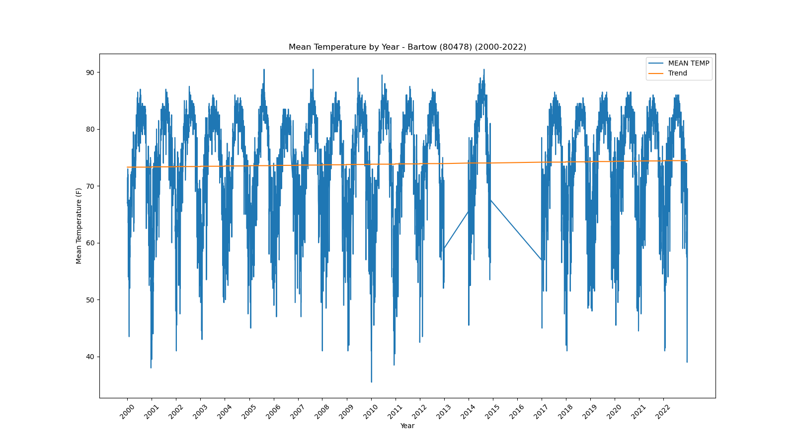</a></div>`)[0];
                popup_504afe22df6049dc19d8657e9dc5ee2d.setContent(html_d7b925c45b7b51eb7e23f5a7cacf91ff);
            
        

        marker_da20f7ab34376e748239d0f702263ac6.bindPopup(popup_504afe22df6049dc19d8657e9dc5ee2d)
        ;

        
    
    
            var marker_21833ef1b9e5ae74498073ab675d170d = L.marker(
                [26.7, -80.66],
                {}
            ).addTo(map_d23b6badc06207b568e286b60bd070d9);
        
    
            var icon_7aa5a4dc2e103dac879f2273971fd00a = L.AwesomeMarkers.icon(
                {"extraClasses": "fa-rotate-0", "icon": "info-sign", "iconColor": "white", "markerColor": "orange", "prefix": "glyphicon"}
            );
            marker_21833ef1b9e5ae74498073ab675d170d.setIcon(icon_7aa5a4dc2e103dac879f2273971fd00a);
        
    
        var popup_705876297253e296637ac0df4d192d5d = L.popup({"maxWidth": 1000, "minWidth": 500});

        
            
                var html_710b82c3c7addb44b39d1771c18ff73e = $(`<div id="html_710b82c3c7addb44b39d1771c18ff73e" style="width: 100.0%; height: 100.0%;"><b>Belle Glade Airport (80611)</b><br>lat: 26.7, lon: -80.66<br><a href='../../static/img/plots/timeseries/meantemp_daily/80611_2000-2022.png' target='_BLANK'></a></div>`)[0];
                popup_705876297253e296637ac0df4d192d5d.setContent(html_710b82c3c7addb44b39d1771c18ff73e);
            
        

        marker_21833ef1b9e5ae74498073ab675d170d.bindPopup(popup_705876297253e296637ac0df4d192d5d)
        ;

        
    
    
            var marker_789db3ca0910e2dccdc81deb5e579364 = L.marker(
                [27.5, -82.57],
                {}
            ).addTo(map_d23b6badc06207b568e286b60bd070d9);
        
    
            var icon_6a9b0f0ab5e5c0eabf9cbbc5cde1d599 = L.AwesomeMarkers.icon(
                {"extraClasses": "fa-rotate-0", "icon": "info-sign", "iconColor": "white", "markerColor": "orange", "prefix": "glyphicon"}
            );
            marker_789db3ca0910e2dccdc81deb5e579364.setIcon(icon_6a9b0f0ab5e5c0eabf9cbbc5cde1d599);
        
    
        var popup_142ad2f73780c17875d6f8a2953fdb8c = L.popup({"maxWidth": 1000, "minWidth": 500});

        
            
                var html_c462415465a3e17a1f38bf62b536a84f = $(`<div id="html_c462415465a3e17a1f38bf62b536a84f" style="width: 100.0%; height: 100.0%;"><b>Bradenton 5 ESE (80945)</b><br>lat: 27.5, lon: -82.57<br><a href='../../static/img/plots/timeseries/meantemp_daily/80945_2000-2022.png' target='_BLANK'>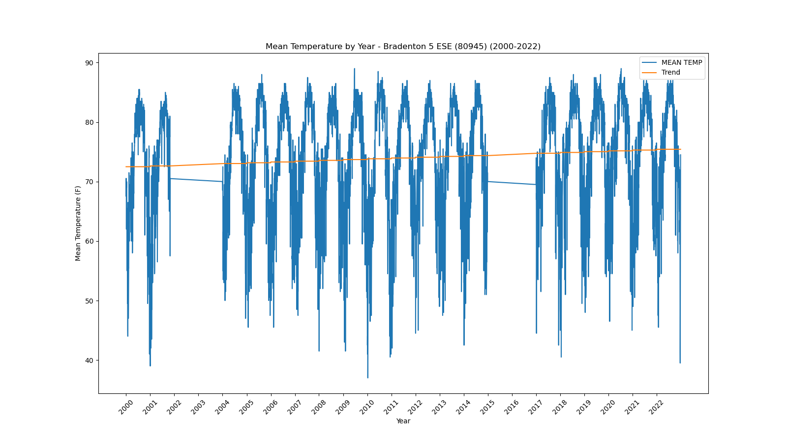</a></div>`)[0];
                popup_142ad2f73780c17875d6f8a2953fdb8c.setContent(html_c462415465a3e17a1f38bf62b536a84f);
            
        

        marker_789db3ca0910e2dccdc81deb5e579364.bindPopup(popup_142ad2f73780c17875d6f8a2953fdb8c)
        ;

        
    
    
            var marker_64f099d9fd4649d7e61b341167ce0151 = L.marker(
                [28.62, -82.37],
                {}
            ).addTo(map_d23b6badc06207b568e286b60bd070d9);
        
    
            var icon_cb76d756fe404c6bef749d262ea1895e = L.AwesomeMarkers.icon(
                {"extraClasses": "fa-rotate-0", "icon": "info-sign", "iconColor": "white", "markerColor": "orange", "prefix": "glyphicon"}
            );
            marker_64f099d9fd4649d7e61b341167ce0151.setIcon(icon_cb76d756fe404c6bef749d262ea1895e);
        
    
        var popup_b46b0d3c7a99d45e4c616251994e2163 = L.popup({"maxWidth": 1000, "minWidth": 500});

        
            
                var html_7338d88fe70f6ece01540cbe57ed302f = $(`<div id="html_7338d88fe70f6ece01540cbe57ed302f" style="width: 100.0%; height: 100.0%;"><b>Chinsegut Hill (81046)</b><br>lat: 28.62, lon: -82.37<br><a href='../../static/img/plots/timeseries/meantemp_daily/81046_2000-2022.png' target='_BLANK'></a></div>`)[0];
                popup_b46b0d3c7a99d45e4c616251994e2163.setContent(html_7338d88fe70f6ece01540cbe57ed302f);
            
        

        marker_64f099d9fd4649d7e61b341167ce0151.bindPopup(popup_b46b0d3c7a99d45e4c616251994e2163)
        ;

        
    
    
            var marker_695b8fd98b361c1e894999e059ac5231 = L.marker(
                [28.66, -82.11],
                {}
            ).addTo(map_d23b6badc06207b568e286b60bd070d9);
        
    
            var icon_3c13c85f8c8ddecc33a6f0803ce573f1 = L.AwesomeMarkers.icon(
                {"extraClasses": "fa-rotate-0", "icon": "info-sign", "iconColor": "white", "markerColor": "orange", "prefix": "glyphicon"}
            );
            marker_695b8fd98b361c1e894999e059ac5231.setIcon(icon_3c13c85f8c8ddecc33a6f0803ce573f1);
        
    
        var popup_64f647b6b75b156b1205c394314f1126 = L.popup({"maxWidth": 1000, "minWidth": 500});

        
            
                var html_8792c6702a5fd1353843cbe437bba9e9 = $(`<div id="html_8792c6702a5fd1353843cbe437bba9e9" style="width: 100.0%; height: 100.0%;"><b>Bushnell 1 E (81163)</b><br>lat: 28.66, lon: -82.11<br><a href='../../static/img/plots/timeseries/meantemp_daily/81163_2000-2022.png' target='_BLANK'></a></div>`)[0];
                popup_64f647b6b75b156b1205c394314f1126.setContent(html_8792c6702a5fd1353843cbe437bba9e9);
            
        

        marker_695b8fd98b361c1e894999e059ac5231.bindPopup(popup_64f647b6b75b156b1205c394314f1126)
        ;

        
    
    
            var marker_16c1700df6dc9ca9945f7304891cf84d = L.marker(
                [26.86, -80.63],
                {}
            ).addTo(map_d23b6badc06207b568e286b60bd070d9);
        
    
            var icon_ac8ac14dd424c1624976e504888ccbd7 = L.AwesomeMarkers.icon(
                {"extraClasses": "fa-rotate-0", "icon": "info-sign", "iconColor": "white", "markerColor": "orange", "prefix": "glyphicon"}
            );
            marker_16c1700df6dc9ca9945f7304891cf84d.setIcon(icon_ac8ac14dd424c1624976e504888ccbd7);
        
    
        var popup_30311be8f5f9baaad1c90a296e5e0d88 = L.popup({"maxWidth": 1000, "minWidth": 500});

        
            
                var html_5f55a3906781548c64fdfe5202bd14ae = $(`<div id="html_5f55a3906781548c64fdfe5202bd14ae" style="width: 100.0%; height: 100.0%;"><b>Canal Point (81276)</b><br>lat: 26.86, lon: -80.63<br><a href='../../static/img/plots/timeseries/meantemp_daily/81276_2000-2022.png' target='_BLANK'></a></div>`)[0];
                popup_30311be8f5f9baaad1c90a296e5e0d88.setContent(html_5f55a3906781548c64fdfe5202bd14ae);
            
        

        marker_16c1700df6dc9ca9945f7304891cf84d.bindPopup(popup_30311be8f5f9baaad1c90a296e5e0d88)
        ;

        
    
    
            var marker_5e96440524788dc84c2fcccd30d4d63f = L.marker(
                [30.78, -85.54],
                {}
            ).addTo(map_d23b6badc06207b568e286b60bd070d9);
        
    
            var icon_86f6ce2ef9acffa7d9c6fc503a1a2693 = L.AwesomeMarkers.icon(
                {"extraClasses": "fa-rotate-0", "icon": "info-sign", "iconColor": "white", "markerColor": "orange", "prefix": "glyphicon"}
            );
            marker_5e96440524788dc84c2fcccd30d4d63f.setIcon(icon_86f6ce2ef9acffa7d9c6fc503a1a2693);
        
    
        var popup_423c9084c8ed4b68e1cec12e036db8b7 = L.popup({"maxWidth": 1000, "minWidth": 500});

        
            
                var html_468c08099a75e440e155b86009e71ca3 = $(`<div id="html_468c08099a75e440e155b86009e71ca3" style="width: 100.0%; height: 100.0%;"><b>Chipley (81544)</b><br>lat: 30.78, lon: -85.54<br><a href='../../static/img/plots/timeseries/meantemp_daily/81544_2000-2022.png' target='_BLANK'>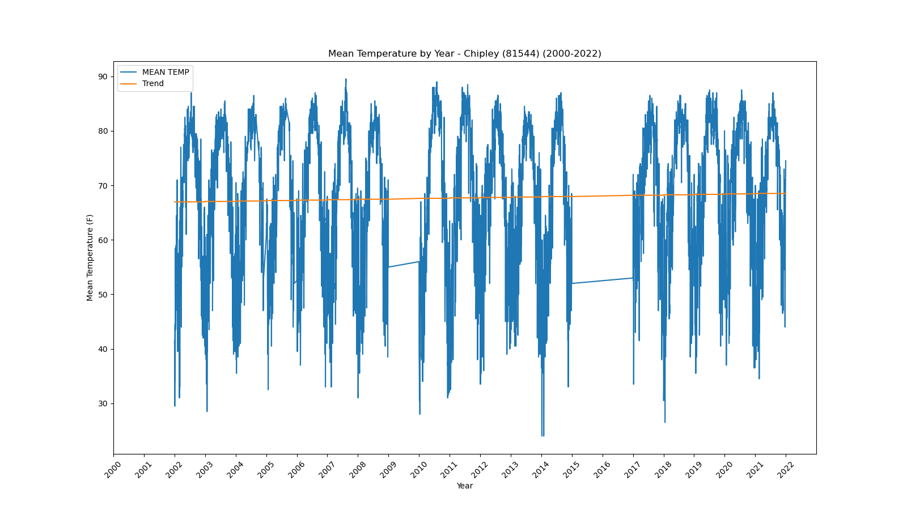</a></div>`)[0];
                popup_423c9084c8ed4b68e1cec12e036db8b7.setContent(html_468c08099a75e440e155b86009e71ca3);
            
        

        marker_5e96440524788dc84c2fcccd30d4d63f.bindPopup(popup_423c9084c8ed4b68e1cec12e036db8b7)
        ;

        
    
    
            var marker_f8a595889d7ef65765c4e6a363a13461 = L.marker(
                [28.56, -81.77],
                {}
            ).addTo(map_d23b6badc06207b568e286b60bd070d9);
        
    
            var icon_5045182952d12b1dfaf659aa681c8324 = L.AwesomeMarkers.icon(
                {"extraClasses": "fa-rotate-0", "icon": "info-sign", "iconColor": "white", "markerColor": "orange", "prefix": "glyphicon"}
            );
            marker_f8a595889d7ef65765c4e6a363a13461.setIcon(icon_5045182952d12b1dfaf659aa681c8324);
        
    
        var popup_eaa48e3d1ca372dbd3377ddd056e7fc0 = L.popup({"maxWidth": 1000, "minWidth": 500});

        
            
                var html_b9bdbd2a9bec4cd3a6e286f353258845 = $(`<div id="html_b9bdbd2a9bec4cd3a6e286f353258845" style="width: 100.0%; height: 100.0%;"><b>Clermont 9 S (81641)</b><br>lat: 28.56, lon: -81.77<br><a href='../../static/img/plots/timeseries/meantemp_daily/81641_2000-2022.png' target='_BLANK'></a></div>`)[0];
                popup_eaa48e3d1ca372dbd3377ddd056e7fc0.setContent(html_b9bdbd2a9bec4cd3a6e286f353258845);
            
        

        marker_f8a595889d7ef65765c4e6a363a13461.bindPopup(popup_eaa48e3d1ca372dbd3377ddd056e7fc0)
        ;

        
    
    
            var marker_6866c1c4b21ab46313f653561cb62b80 = L.marker(
                [29.43, -81.51],
                {}
            ).addTo(map_d23b6badc06207b568e286b60bd070d9);
        
    
            var icon_fb2fa0114cc8b6205c66eb965ba91bf7 = L.AwesomeMarkers.icon(
                {"extraClasses": "fa-rotate-0", "icon": "info-sign", "iconColor": "white", "markerColor": "orange", "prefix": "glyphicon"}
            );
            marker_6866c1c4b21ab46313f653561cb62b80.setIcon(icon_fb2fa0114cc8b6205c66eb965ba91bf7);
        
    
        var popup_e7d34e431a96e89f1066de2591b3275f = L.popup({"maxWidth": 1000, "minWidth": 500});

        
            
                var html_e428dea2b1ccf6c4f9c94ff1376f5b01 = $(`<div id="html_e428dea2b1ccf6c4f9c94ff1376f5b01" style="width: 100.0%; height: 100.0%;"><b>Crescent City (81978)</b><br>lat: 29.43, lon: -81.51<br><a href='../../static/img/plots/timeseries/meantemp_daily/81978_2000-2022.png' target='_BLANK'></a></div>`)[0];
                popup_e7d34e431a96e89f1066de2591b3275f.setContent(html_e428dea2b1ccf6c4f9c94ff1376f5b01);
            
        

        marker_6866c1c4b21ab46313f653561cb62b80.bindPopup(popup_e7d34e431a96e89f1066de2591b3275f)
        ;

        
    
    
            var marker_02a36b5639af0c3ff6669ab772499dc6 = L.marker(
                [30.78, -86.52],
                {}
            ).addTo(map_d23b6badc06207b568e286b60bd070d9);
        
    
            var icon_d0cb774580347c05fac23256a7b8543a = L.AwesomeMarkers.icon(
                {"extraClasses": "fa-rotate-0", "icon": "info-sign", "iconColor": "white", "markerColor": "orange", "prefix": "glyphicon"}
            );
            marker_02a36b5639af0c3ff6669ab772499dc6.setIcon(icon_d0cb774580347c05fac23256a7b8543a);
        
    
        var popup_10ce35ecc23b860f906141971e58977b = L.popup({"maxWidth": 1000, "minWidth": 500});

        
            
                var html_03b392e316340ba7748f5042c8452953 = $(`<div id="html_03b392e316340ba7748f5042c8452953" style="width: 100.0%; height: 100.0%;"><b>Crestview Bob Sikes Airport (81986)</b><br>lat: 30.78, lon: -86.52<br><a href='../../static/img/plots/timeseries/meantemp_daily/81986_2000-2022.png' target='_BLANK'>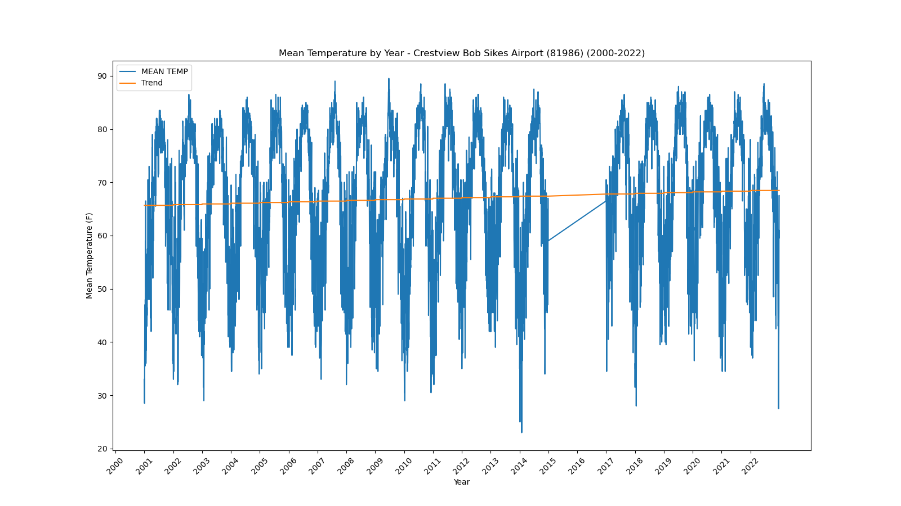</a></div>`)[0];
                popup_10ce35ecc23b860f906141971e58977b.setContent(html_03b392e316340ba7748f5042c8452953);
            
        

        marker_02a36b5639af0c3ff6669ab772499dc6.bindPopup(popup_10ce35ecc23b860f906141971e58977b)
        ;

        
    
    
            var marker_6c14c000e24cc93e72859f44091162a5 = L.marker(
                [29.63, -83.13],
                {}
            ).addTo(map_d23b6badc06207b568e286b60bd070d9);
        
    
            var icon_ff87f20bf89898f0d1fd91b7210e6f8b = L.AwesomeMarkers.icon(
                {"extraClasses": "fa-rotate-0", "icon": "info-sign", "iconColor": "white", "markerColor": "orange", "prefix": "glyphicon"}
            );
            marker_6c14c000e24cc93e72859f44091162a5.setIcon(icon_ff87f20bf89898f0d1fd91b7210e6f8b);
        
    
        var popup_43d348d3684649a837b327c62a52819c = L.popup({"maxWidth": 1000, "minWidth": 500});

        
            
                var html_400a06287c2b15d30751653c35b49753 = $(`<div id="html_400a06287c2b15d30751653c35b49753" style="width: 100.0%; height: 100.0%;"><b>Cross City 1 E (82008)</b><br>lat: 29.63, lon: -83.13<br><a href='../../static/img/plots/timeseries/meantemp_daily/82008_2000-2022.png' target='_BLANK'></a></div>`)[0];
                popup_43d348d3684649a837b327c62a52819c.setContent(html_400a06287c2b15d30751653c35b49753);
            
        

        marker_6c14c000e24cc93e72859f44091162a5.bindPopup(popup_43d348d3684649a837b327c62a52819c)
        ;

        
    
    
            var marker_e6a8480c3d5c08ea9dc875f79845b2ea = L.marker(
                [29.16, -81.0],
                {}
            ).addTo(map_d23b6badc06207b568e286b60bd070d9);
        
    
            var icon_5b2c96ffe078d578b54f9146cac7393b = L.AwesomeMarkers.icon(
                {"extraClasses": "fa-rotate-0", "icon": "info-sign", "iconColor": "white", "markerColor": "orange", "prefix": "glyphicon"}
            );
            marker_e6a8480c3d5c08ea9dc875f79845b2ea.setIcon(icon_5b2c96ffe078d578b54f9146cac7393b);
        
    
        var popup_0b2561ac27b831c4d5c50d738e2319c6 = L.popup({"maxWidth": 1000, "minWidth": 500});

        
            
                var html_af54983020c6e6864101ee5723a864e4 = $(`<div id="html_af54983020c6e6864101ee5723a864e4" style="width: 100.0%; height: 100.0%;"><b>Daytona Beach (82150)</b><br>lat: 29.16, lon: -81<br><a href='../../static/img/plots/timeseries/meantemp_daily/82150_2000-2022.png' target='_BLANK'></a></div>`)[0];
                popup_0b2561ac27b831c4d5c50d738e2319c6.setContent(html_af54983020c6e6864101ee5723a864e4);
            
        

        marker_e6a8480c3d5c08ea9dc875f79845b2ea.bindPopup(popup_0b2561ac27b831c4d5c50d738e2319c6)
        ;

        
    
    
            var marker_1c29206d3e594403cc7afaae990f0c4f = L.marker(
                [29.18, -81.06],
                {}
            ).addTo(map_d23b6badc06207b568e286b60bd070d9);
        
    
            var icon_2a877a37bf5e4aa93e5c2631f5e0a0f2 = L.AwesomeMarkers.icon(
                {"extraClasses": "fa-rotate-0", "icon": "info-sign", "iconColor": "white", "markerColor": "orange", "prefix": "glyphicon"}
            );
            marker_1c29206d3e594403cc7afaae990f0c4f.setIcon(icon_2a877a37bf5e4aa93e5c2631f5e0a0f2);
        
    
        var popup_bafa1d66f582c16b8eebc35c3b3b156b = L.popup({"maxWidth": 1000, "minWidth": 500});

        
            
                var html_392fe08449dcff2ea9ece1191d513baa = $(`<div id="html_392fe08449dcff2ea9ece1191d513baa" style="width: 100.0%; height: 100.0%;"><b>Daytona Beach Intl Airport (82158)</b><br>lat: 29.18, lon: -81.06<br><a href='../../static/img/plots/timeseries/meantemp_daily/82158_2000-2022.png' target='_BLANK'></a></div>`)[0];
                popup_bafa1d66f582c16b8eebc35c3b3b156b.setContent(html_392fe08449dcff2ea9ece1191d513baa);
            
        

        marker_1c29206d3e594403cc7afaae990f0c4f.bindPopup(popup_bafa1d66f582c16b8eebc35c3b3b156b)
        ;

        
    
    
            var marker_28ad04fbd9fe586c8fa41d659d7f41c0 = L.marker(
                [30.72, -86.12],
                {}
            ).addTo(map_d23b6badc06207b568e286b60bd070d9);
        
    
            var icon_1a6aef7db81f52446b01dc99b28cfb62 = L.AwesomeMarkers.icon(
                {"extraClasses": "fa-rotate-0", "icon": "info-sign", "iconColor": "white", "markerColor": "orange", "prefix": "glyphicon"}
            );
            marker_28ad04fbd9fe586c8fa41d659d7f41c0.setIcon(icon_1a6aef7db81f52446b01dc99b28cfb62);
        
    
        var popup_749ea65f2383ce13ffa82a247dbd25f4 = L.popup({"maxWidth": 1000, "minWidth": 500});

        
            
                var html_bd0b146a9a2cd09683ef7385b95729ad = $(`<div id="html_bd0b146a9a2cd09683ef7385b95729ad" style="width: 100.0%; height: 100.0%;"><b>De Funiak Springs 1 E (82220)</b><br>lat: 30.72, lon: -86.12<br><a href='../../static/img/plots/timeseries/meantemp_daily/82220_2000-2022.png' target='_BLANK'></a></div>`)[0];
                popup_749ea65f2383ce13ffa82a247dbd25f4.setContent(html_bd0b146a9a2cd09683ef7385b95729ad);
            
        

        marker_28ad04fbd9fe586c8fa41d659d7f41c0.bindPopup(popup_749ea65f2383ce13ffa82a247dbd25f4)
        ;

        
    
    
            var marker_83d03d670527e5fcf4181caafd51daea = L.marker(
                [29.03, -81.3],
                {}
            ).addTo(map_d23b6badc06207b568e286b60bd070d9);
        
    
            var icon_f871f301846c839ddb9785eaecf1bcf2 = L.AwesomeMarkers.icon(
                {"extraClasses": "fa-rotate-0", "icon": "info-sign", "iconColor": "white", "markerColor": "orange", "prefix": "glyphicon"}
            );
            marker_83d03d670527e5fcf4181caafd51daea.setIcon(icon_f871f301846c839ddb9785eaecf1bcf2);
        
    
        var popup_3c83d9ada6353540b74fe545ffdb47c9 = L.popup({"maxWidth": 1000, "minWidth": 500});

        
            
                var html_efdff4883ec91403da1e3249e07cb6db = $(`<div id="html_efdff4883ec91403da1e3249e07cb6db" style="width: 100.0%; height: 100.0%;"><b>Deland 1 SSE (82229)</b><br>lat: 29.03, lon: -81.3<br><a href='../../static/img/plots/timeseries/meantemp_daily/82229_2000-2022.png' target='_BLANK'>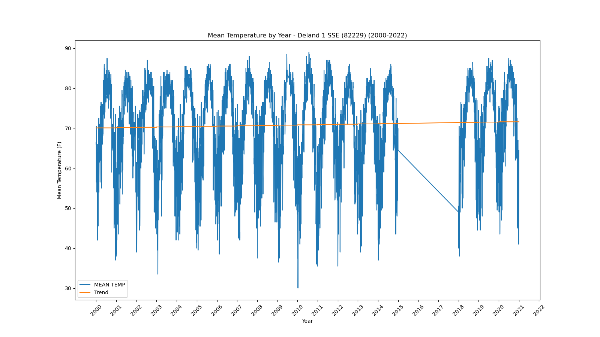</a></div>`)[0];
                popup_3c83d9ada6353540b74fe545ffdb47c9.setContent(html_efdff4883ec91403da1e3249e07cb6db);
            
        

        marker_83d03d670527e5fcf4181caafd51daea.bindPopup(popup_3c83d9ada6353540b74fe545ffdb47c9)
        ;

        
    
    
            var marker_62b1094dc0069a4d2e99c12ec1e610ca = L.marker(
                [30.71, -85.72],
                {}
            ).addTo(map_d23b6badc06207b568e286b60bd070d9);
        
    
            var icon_11d69f1c886a7bdf874dccfc78c43482 = L.AwesomeMarkers.icon(
                {"extraClasses": "fa-rotate-0", "icon": "info-sign", "iconColor": "white", "markerColor": "orange", "prefix": "glyphicon"}
            );
            marker_62b1094dc0069a4d2e99c12ec1e610ca.setIcon(icon_11d69f1c886a7bdf874dccfc78c43482);
        
    
        var popup_6f21ca1b70f4dad8420ef43a70a57808 = L.popup({"maxWidth": 1000, "minWidth": 500});

        
            
                var html_bb3badc7330f360a0e3a7c5aeb711a03 = $(`<div id="html_bb3badc7330f360a0e3a7c5aeb711a03" style="width: 100.0%; height: 100.0%;"><b>Devils Garden (82298)</b><br>lat: 30.71, lon: -85.72<br><a href='../../static/img/plots/timeseries/meantemp_daily/82298_2000-2022.png' target='_BLANK'></a></div>`)[0];
                popup_6f21ca1b70f4dad8420ef43a70a57808.setContent(html_bb3badc7330f360a0e3a7c5aeb711a03);
            
        

        marker_62b1094dc0069a4d2e99c12ec1e610ca.bindPopup(popup_6f21ca1b70f4dad8420ef43a70a57808)
        ;

        
    
    
            var marker_6cbb267696622d068da4ffa1c358eecc = L.marker(
                [25.29, -80.89],
                {}
            ).addTo(map_d23b6badc06207b568e286b60bd070d9);
        
    
            var icon_2de34d270228528299410345fe88e0ef = L.AwesomeMarkers.icon(
                {"extraClasses": "fa-rotate-0", "icon": "info-sign", "iconColor": "white", "markerColor": "orange", "prefix": "glyphicon"}
            );
            marker_6cbb267696622d068da4ffa1c358eecc.setIcon(icon_2de34d270228528299410345fe88e0ef);
        
    
        var popup_962252f2e3da76d0e92da67d532c2c3d = L.popup({"maxWidth": 1000, "minWidth": 500});

        
            
                var html_60dc3c17049d706d03a45744958e25dc = $(`<div id="html_60dc3c17049d706d03a45744958e25dc" style="width: 100.0%; height: 100.0%;"><b>Everglades (82850)</b><br>lat: 25.29, lon: -80.89<br><a href='../../static/img/plots/timeseries/meantemp_daily/82850_2000-2022.png' target='_BLANK'></a></div>`)[0];
                popup_962252f2e3da76d0e92da67d532c2c3d.setContent(html_60dc3c17049d706d03a45744958e25dc);
            
        

        marker_6cbb267696622d068da4ffa1c358eecc.bindPopup(popup_962252f2e3da76d0e92da67d532c2c3d)
        ;

        
    
    
            var marker_6ceb1a5fc80d7440b24450fd79b8e69f = L.marker(
                [29.75, -81.54],
                {}
            ).addTo(map_d23b6badc06207b568e286b60bd070d9);
        
    
            var icon_dc6dc79fc0793c278cd4aefef948c52d = L.AwesomeMarkers.icon(
                {"extraClasses": "fa-rotate-0", "icon": "info-sign", "iconColor": "white", "markerColor": "blue", "prefix": "glyphicon"}
            );
            marker_6ceb1a5fc80d7440b24450fd79b8e69f.setIcon(icon_dc6dc79fc0793c278cd4aefef948c52d);
        
    
        var popup_3588ba526512bb2fb3d104277548b8b0 = L.popup({"maxWidth": 1000, "minWidth": 500});

        
            
                var html_8ebd8bfc452e89fcf898e67d8dea84b9 = $(`<div id="html_8ebd8bfc452e89fcf898e67d8dea84b9" style="width: 100.0%; height: 100.0%;"><b>Federal Point (82915)</b><br>lat: 29.75, lon: -81.54<br><a href='../../static/img/plots/timeseries/meantemp_daily/82915_2000-2022.png' target='_BLANK'></a></div>`)[0];
                popup_3588ba526512bb2fb3d104277548b8b0.setContent(html_8ebd8bfc452e89fcf898e67d8dea84b9);
            
        

        marker_6ceb1a5fc80d7440b24450fd79b8e69f.bindPopup(popup_3588ba526512bb2fb3d104277548b8b0)
        ;

        
    
    
            var marker_ee0d841b149a27d9fda1b3402fedd9da = L.marker(
                [30.62, -81.46],
                {}
            ).addTo(map_d23b6badc06207b568e286b60bd070d9);
        
    
            var icon_d57685749257ca41e5eb11c7081610c9 = L.AwesomeMarkers.icon(
                {"extraClasses": "fa-rotate-0", "icon": "info-sign", "iconColor": "white", "markerColor": "orange", "prefix": "glyphicon"}
            );
            marker_ee0d841b149a27d9fda1b3402fedd9da.setIcon(icon_d57685749257ca41e5eb11c7081610c9);
        
    
        var popup_2fd2549497c1c1ed492f024cb3c74995 = L.popup({"maxWidth": 1000, "minWidth": 500});

        
            
                var html_89dff3149e4394bf05f514c295bf4429 = $(`<div id="html_89dff3149e4394bf05f514c295bf4429" style="width: 100.0%; height: 100.0%;"><b>Fernandina Beach (82944)</b><br>lat: 30.62, lon: -81.46<br><a href='../../static/img/plots/timeseries/meantemp_daily/82944_2000-2022.png' target='_BLANK'></a></div>`)[0];
                popup_2fd2549497c1c1ed492f024cb3c74995.setContent(html_89dff3149e4394bf05f514c295bf4429);
            
        

        marker_ee0d841b149a27d9fda1b3402fedd9da.bindPopup(popup_2fd2549497c1c1ed492f024cb3c74995)
        ;

        
    
    
            var marker_456034a70e21d15976179807cf9c40cb = L.marker(
                [25.14, -80.93],
                {}
            ).addTo(map_d23b6badc06207b568e286b60bd070d9);
        
    
            var icon_346634302901d1de328e8e89b313d064 = L.AwesomeMarkers.icon(
                {"extraClasses": "fa-rotate-0", "icon": "info-sign", "iconColor": "white", "markerColor": "orange", "prefix": "glyphicon"}
            );
            marker_456034a70e21d15976179807cf9c40cb.setIcon(icon_346634302901d1de328e8e89b313d064);
        
    
        var popup_93a5c634f32f6f3a068a261c31200768 = L.popup({"maxWidth": 1000, "minWidth": 500});

        
            
                var html_d40fbf0783c8efafdeb66f11e7e6f418 = $(`<div id="html_d40fbf0783c8efafdeb66f11e7e6f418" style="width: 100.0%; height: 100.0%;"><b>Flamingo Ranger Station (83020)</b><br>lat: 25.14, lon: -80.93<br><a href='../../static/img/plots/timeseries/meantemp_daily/83020_2000-2022.png' target='_BLANK'>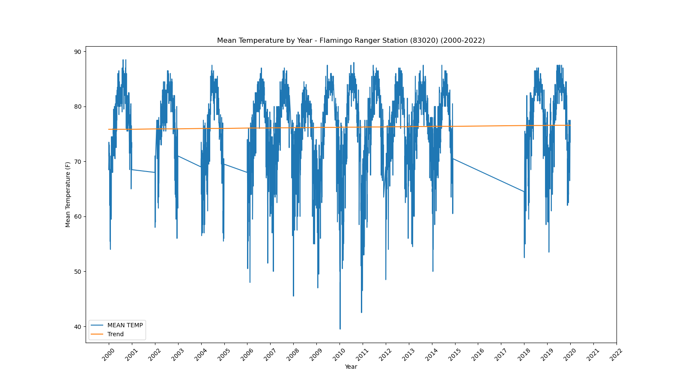</a></div>`)[0];
                popup_93a5c634f32f6f3a068a261c31200768.setContent(html_d40fbf0783c8efafdeb66f11e7e6f418);
            
        

        marker_456034a70e21d15976179807cf9c40cb.bindPopup(popup_93a5c634f32f6f3a068a261c31200768)
        ;

        
    
    
            var marker_1d2314c267b889b2c0028a21d2d6c6b0 = L.marker(
                [27.53, -80.81],
                {}
            ).addTo(map_d23b6badc06207b568e286b60bd070d9);
        
    
            var icon_1ff57a410a669f7c2beaf582ce341ab2 = L.AwesomeMarkers.icon(
                {"extraClasses": "fa-rotate-0", "icon": "info-sign", "iconColor": "white", "markerColor": "orange", "prefix": "glyphicon"}
            );
            marker_1d2314c267b889b2c0028a21d2d6c6b0.setIcon(icon_1ff57a410a669f7c2beaf582ce341ab2);
        
    
        var popup_f44bfff67406ef2c12a1221f8612c140 = L.popup({"maxWidth": 1000, "minWidth": 500});

        
            
                var html_0b7741672a8927eac0a4979d0980afae = $(`<div id="html_0b7741672a8927eac0a4979d0980afae" style="width: 100.0%; height: 100.0%;"><b>Fort Drum (83137)</b><br>lat: 27.53, lon: -80.81<br><a href='../../static/img/plots/timeseries/meantemp_daily/83137_2000-2022.png' target='_BLANK'></a></div>`)[0];
                popup_f44bfff67406ef2c12a1221f8612c140.setContent(html_0b7741672a8927eac0a4979d0980afae);
            
        

        marker_1d2314c267b889b2c0028a21d2d6c6b0.bindPopup(popup_f44bfff67406ef2c12a1221f8612c140)
        ;

        
    
    
            var marker_040b7228e2155a5afed8b4cd4e491405 = L.marker(
                [27.61, -81.94],
                {}
            ).addTo(map_d23b6badc06207b568e286b60bd070d9);
        
    
            var icon_ee5a09b444a5a345a957fd398cff730e = L.AwesomeMarkers.icon(
                {"extraClasses": "fa-rotate-0", "icon": "info-sign", "iconColor": "white", "markerColor": "orange", "prefix": "glyphicon"}
            );
            marker_040b7228e2155a5afed8b4cd4e491405.setIcon(icon_ee5a09b444a5a345a957fd398cff730e);
        
    
        var popup_9adc7fbcadd34e3d9894c3cf99b4c49c = L.popup({"maxWidth": 1000, "minWidth": 500});

        
            
                var html_4f4fb8cc956df2f9193f47140cc4eeaa = $(`<div id="html_4f4fb8cc956df2f9193f47140cc4eeaa" style="width: 100.0%; height: 100.0%;"><b>Fort Green 12 WSW (83153)</b><br>lat: 27.61, lon: -81.94<br><a href='../../static/img/plots/timeseries/meantemp_daily/83153_2000-2022.png' target='_BLANK'>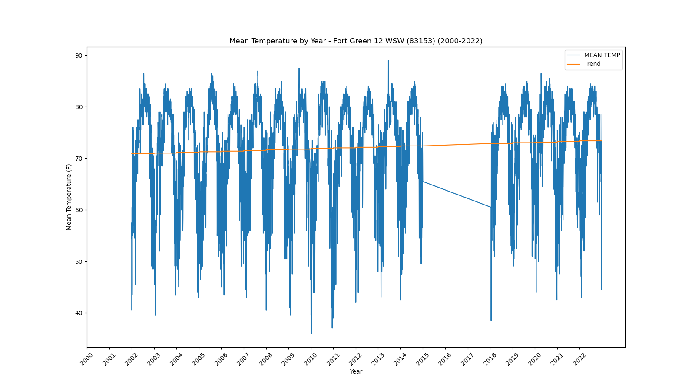</a></div>`)[0];
                popup_9adc7fbcadd34e3d9894c3cf99b4c49c.setContent(html_4f4fb8cc956df2f9193f47140cc4eeaa);
            
        

        marker_040b7228e2155a5afed8b4cd4e491405.bindPopup(popup_9adc7fbcadd34e3d9894c3cf99b4c49c)
        ;

        
    
    
            var marker_2ed64e85d49cd92e4c0c6d05c010f063 = L.marker(
                [26.07, -80.15],
                {}
            ).addTo(map_d23b6badc06207b568e286b60bd070d9);
        
    
            var icon_4927e4252a1231480fbc5401b1cc340f = L.AwesomeMarkers.icon(
                {"extraClasses": "fa-rotate-0", "icon": "info-sign", "iconColor": "white", "markerColor": "orange", "prefix": "glyphicon"}
            );
            marker_2ed64e85d49cd92e4c0c6d05c010f063.setIcon(icon_4927e4252a1231480fbc5401b1cc340f);
        
    
        var popup_5bc6fdb59d44793349cd6e65b6f13a7c = L.popup({"maxWidth": 1000, "minWidth": 500});

        
            
                var html_d9227f5401005d3509d135b5ec140a9f = $(`<div id="html_d9227f5401005d3509d135b5ec140a9f" style="width: 100.0%; height: 100.0%;"><b>Ft Lauderdale (83163)</b><br>lat: 26.07, lon: -80.15<br><a href='../../static/img/plots/timeseries/meantemp_daily/83163_2000-2022.png' target='_BLANK'>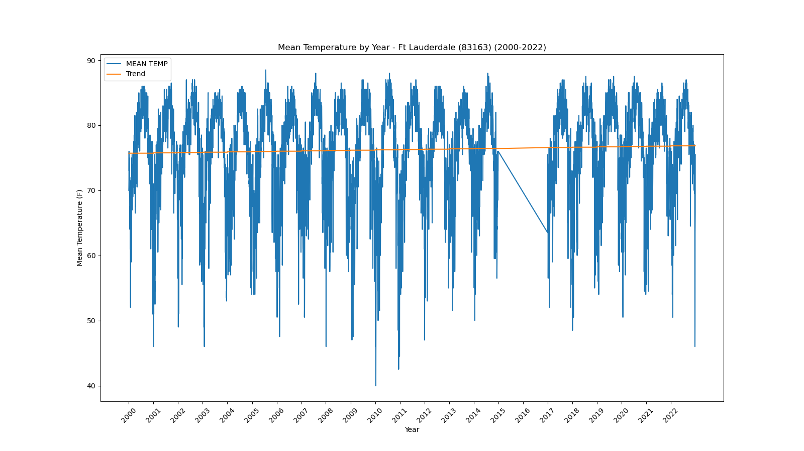</a></div>`)[0];
                popup_5bc6fdb59d44793349cd6e65b6f13a7c.setContent(html_d9227f5401005d3509d135b5ec140a9f);
            
        

        marker_2ed64e85d49cd92e4c0c6d05c010f063.bindPopup(popup_5bc6fdb59d44793349cd6e65b6f13a7c)
        ;

        
    
    
            var marker_eef7c2197e944ca2c2cc54d563f4a5d3 = L.marker(
                [26.13, -80.11],
                {}
            ).addTo(map_d23b6badc06207b568e286b60bd070d9);
        
    
            var icon_fa7dc2231f96e99e43bc36571634e9dd = L.AwesomeMarkers.icon(
                {"extraClasses": "fa-rotate-0", "icon": "info-sign", "iconColor": "white", "markerColor": "orange", "prefix": "glyphicon"}
            );
            marker_eef7c2197e944ca2c2cc54d563f4a5d3.setIcon(icon_fa7dc2231f96e99e43bc36571634e9dd);
        
    
        var popup_c666153df8bc2825dd57b6f621ac2793 = L.popup({"maxWidth": 1000, "minWidth": 500});

        
            
                var html_03f36a2016cf2737c77c294117db91b9 = $(`<div id="html_03f36a2016cf2737c77c294117db91b9" style="width: 100.0%; height: 100.0%;"><b>Ft Lauderdale Beach (83168)</b><br>lat: 26.13, lon: -80.11<br><a href='../../static/img/plots/timeseries/meantemp_daily/83168_2000-2022.png' target='_BLANK'></a></div>`)[0];
                popup_c666153df8bc2825dd57b6f621ac2793.setContent(html_03f36a2016cf2737c77c294117db91b9);
            
        

        marker_eef7c2197e944ca2c2cc54d563f4a5d3.bindPopup(popup_c666153df8bc2825dd57b6f621ac2793)
        ;

        
    
    
            var marker_ede93a170d5a67f2ec3883bca5c9ce16 = L.marker(
                [26.59, -81.87],
                {}
            ).addTo(map_d23b6badc06207b568e286b60bd070d9);
        
    
            var icon_73d27eac1cd20bc3fe795aa75fbeb4c8 = L.AwesomeMarkers.icon(
                {"extraClasses": "fa-rotate-0", "icon": "info-sign", "iconColor": "white", "markerColor": "orange", "prefix": "glyphicon"}
            );
            marker_ede93a170d5a67f2ec3883bca5c9ce16.setIcon(icon_73d27eac1cd20bc3fe795aa75fbeb4c8);
        
    
        var popup_2c31ae546307a2c5a12b8fc1b26eff6e = L.popup({"maxWidth": 1000, "minWidth": 500});

        
            
                var html_184c6c7be080580c427554080818fa15 = $(`<div id="html_184c6c7be080580c427554080818fa15" style="width: 100.0%; height: 100.0%;"><b>Fort Myers Page Field Airport (83186)</b><br>lat: 26.59, lon: -81.87<br><a href='../../static/img/plots/timeseries/meantemp_daily/83186_2000-2022.png' target='_BLANK'></a></div>`)[0];
                popup_2c31ae546307a2c5a12b8fc1b26eff6e.setContent(html_184c6c7be080580c427554080818fa15);
            
        

        marker_ede93a170d5a67f2ec3883bca5c9ce16.bindPopup(popup_2c31ae546307a2c5a12b8fc1b26eff6e)
        ;

        
    
    
            var marker_c9e0981b6d2fb96f833e9a03578688ad = L.marker(
                [27.44, -80.34],
                {}
            ).addTo(map_d23b6badc06207b568e286b60bd070d9);
        
    
            var icon_fc3aeac2b90f0277347c9bfe43878d07 = L.AwesomeMarkers.icon(
                {"extraClasses": "fa-rotate-0", "icon": "info-sign", "iconColor": "white", "markerColor": "orange", "prefix": "glyphicon"}
            );
            marker_c9e0981b6d2fb96f833e9a03578688ad.setIcon(icon_fc3aeac2b90f0277347c9bfe43878d07);
        
    
        var popup_99f69e179ffd9ed17c9df95732acecd8 = L.popup({"maxWidth": 1000, "minWidth": 500});

        
            
                var html_6735416e9cd86df244946c6bedfc8079 = $(`<div id="html_6735416e9cd86df244946c6bedfc8079" style="width: 100.0%; height: 100.0%;"><b>Fort Pierce (83207)</b><br>lat: 27.44, lon: -80.34<br><a href='../../static/img/plots/timeseries/meantemp_daily/83207_2000-2022.png' target='_BLANK'>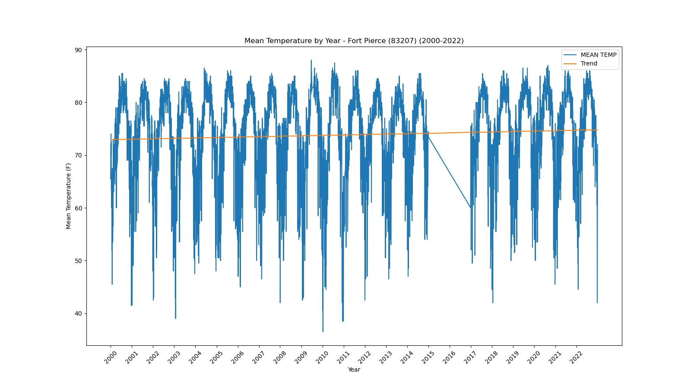</a></div>`)[0];
                popup_99f69e179ffd9ed17c9df95732acecd8.setContent(html_6735416e9cd86df244946c6bedfc8079);
            
        

        marker_c9e0981b6d2fb96f833e9a03578688ad.bindPopup(popup_99f69e179ffd9ed17c9df95732acecd8)
        ;

        
    
    
            var marker_329995c273036bfed1e2e31cfaf7d1aa = L.marker(
                [29.69, -82.28],
                {}
            ).addTo(map_d23b6badc06207b568e286b60bd070d9);
        
    
            var icon_131fc1946625c7a60b6184bc2b141b67 = L.AwesomeMarkers.icon(
                {"extraClasses": "fa-rotate-0", "icon": "info-sign", "iconColor": "white", "markerColor": "orange", "prefix": "glyphicon"}
            );
            marker_329995c273036bfed1e2e31cfaf7d1aa.setIcon(icon_131fc1946625c7a60b6184bc2b141b67);
        
    
        var popup_acda7448cab867379f3c7c9ef523d5bf = L.popup({"maxWidth": 1000, "minWidth": 500});

        
            
                var html_021b7c0d05503c5a010b83b9b130500c = $(`<div id="html_021b7c0d05503c5a010b83b9b130500c" style="width: 100.0%; height: 100.0%;"><b>Gainesville Regional Airport (83326)</b><br>lat: 29.69, lon: -82.28<br><a href='../../static/img/plots/timeseries/meantemp_daily/83326_2000-2022.png' target='_BLANK'></a></div>`)[0];
                popup_acda7448cab867379f3c7c9ef523d5bf.setContent(html_021b7c0d05503c5a010b83b9b130500c);
            
        

        marker_329995c273036bfed1e2e31cfaf7d1aa.bindPopup(popup_acda7448cab867379f3c7c9ef523d5bf)
        ;

        
    
    
            var marker_70a95026d535b1b725ae5821fa33a154 = L.marker(
                [30.28, -82.16],
                {}
            ).addTo(map_d23b6badc06207b568e286b60bd070d9);
        
    
            var icon_2c1b31025d25c07c6eb0aa2e16604e1e = L.AwesomeMarkers.icon(
                {"extraClasses": "fa-rotate-0", "icon": "info-sign", "iconColor": "white", "markerColor": "orange", "prefix": "glyphicon"}
            );
            marker_70a95026d535b1b725ae5821fa33a154.setIcon(icon_2c1b31025d25c07c6eb0aa2e16604e1e);
        
    
        var popup_8a3429c0b9754b474fb0bb88018be2ff = L.popup({"maxWidth": 1000, "minWidth": 500});

        
            
                var html_250d9c318f50e3d02bb8050a028fc70e = $(`<div id="html_250d9c318f50e3d02bb8050a028fc70e" style="width: 100.0%; height: 100.0%;"><b>Glen St Mary 1 W (83470)</b><br>lat: 30.28, lon: -82.16<br><a href='../../static/img/plots/timeseries/meantemp_daily/83470_2000-2022.png' target='_BLANK'></a></div>`)[0];
                popup_8a3429c0b9754b474fb0bb88018be2ff.setContent(html_250d9c318f50e3d02bb8050a028fc70e);
            
        

        marker_70a95026d535b1b725ae5821fa33a154.bindPopup(popup_8a3429c0b9754b474fb0bb88018be2ff)
        ;

        
    
    
            var marker_0936d8f02becb1a9bf39516ab467521e = L.marker(
                [29.72, -81.51],
                {}
            ).addTo(map_d23b6badc06207b568e286b60bd070d9);
        
    
            var icon_726380f94c1da02632bfcad0fab465d5 = L.AwesomeMarkers.icon(
                {"extraClasses": "fa-rotate-0", "icon": "info-sign", "iconColor": "white", "markerColor": "orange", "prefix": "glyphicon"}
            );
            marker_0936d8f02becb1a9bf39516ab467521e.setIcon(icon_726380f94c1da02632bfcad0fab465d5);
        
    
        var popup_70a52672baac836384bda868ed09ddf2 = L.popup({"maxWidth": 1000, "minWidth": 500});

        
            
                var html_336805db8c189e4216fc989191ffa558 = $(`<div id="html_336805db8c189e4216fc989191ffa558" style="width: 100.0%; height: 100.0%;"><b>Hastings 4 NE (83874)</b><br>lat: 29.72, lon: -81.51<br><a href='../../static/img/plots/timeseries/meantemp_daily/83874_2000-2022.png' target='_BLANK'></a></div>`)[0];
                popup_70a52672baac836384bda868ed09ddf2.setContent(html_336805db8c189e4216fc989191ffa558);
            
        

        marker_0936d8f02becb1a9bf39516ab467521e.bindPopup(popup_70a52672baac836384bda868ed09ddf2)
        ;

        
    
    
            var marker_4018df50b87dee87cb63b868fb6502b6 = L.marker(
                [25.86, -80.28],
                {}
            ).addTo(map_d23b6badc06207b568e286b60bd070d9);
        
    
            var icon_c0d396dc2beacd335813a586011ddd08 = L.AwesomeMarkers.icon(
                {"extraClasses": "fa-rotate-0", "icon": "info-sign", "iconColor": "white", "markerColor": "orange", "prefix": "glyphicon"}
            );
            marker_4018df50b87dee87cb63b868fb6502b6.setIcon(icon_c0d396dc2beacd335813a586011ddd08);
        
    
        var popup_183e2d6dbbfa3f3879875fda07d9622c = L.popup({"maxWidth": 1000, "minWidth": 500});

        
            
                var html_5a9fa1868e0cc4595819386f1eb5e849 = $(`<div id="html_5a9fa1868e0cc4595819386f1eb5e849" style="width: 100.0%; height: 100.0%;"><b>Hialeah (83909)</b><br>lat: 25.86, lon: -80.28<br><a href='../../static/img/plots/timeseries/meantemp_daily/83909_2000-2022.png' target='_BLANK'></a></div>`)[0];
                popup_183e2d6dbbfa3f3879875fda07d9622c.setContent(html_5a9fa1868e0cc4595819386f1eb5e849);
            
        

        marker_4018df50b87dee87cb63b868fb6502b6.bindPopup(popup_183e2d6dbbfa3f3879875fda07d9622c)
        ;

        
    
    
            var marker_3174e8a4055eeff0edb259b146dc0133 = L.marker(
                [29.83, -82.6],
                {}
            ).addTo(map_d23b6badc06207b568e286b60bd070d9);
        
    
            var icon_ec3806163f078ddbf82490d2c1498229 = L.AwesomeMarkers.icon(
                {"extraClasses": "fa-rotate-0", "icon": "info-sign", "iconColor": "white", "markerColor": "blue", "prefix": "glyphicon"}
            );
            marker_3174e8a4055eeff0edb259b146dc0133.setIcon(icon_ec3806163f078ddbf82490d2c1498229);
        
    
        var popup_8814b90f3733e24bf2cb488fdd523101 = L.popup({"maxWidth": 1000, "minWidth": 500});

        
            
                var html_53eb93387bb6eadea1769935b6961b8a = $(`<div id="html_53eb93387bb6eadea1769935b6961b8a" style="width: 100.0%; height: 100.0%;"><b>High Springs (83956)</b><br>lat: 29.83, lon: -82.6<br><a href='../../static/img/plots/timeseries/meantemp_daily/83956_2000-2022.png' target='_BLANK'>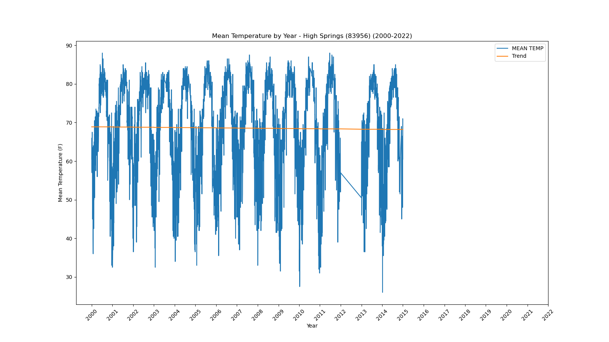</a></div>`)[0];
                popup_8814b90f3733e24bf2cb488fdd523101.setContent(html_53eb93387bb6eadea1769935b6961b8a);
            
        

        marker_3174e8a4055eeff0edb259b146dc0133.bindPopup(popup_8814b90f3733e24bf2cb488fdd523101)
        ;

        
    
    
            var marker_feb8529e35a963618596307d46afb9ce = L.marker(
                [26.42, -81.42],
                {}
            ).addTo(map_d23b6badc06207b568e286b60bd070d9);
        
    
            var icon_f27e2d37586d9dbc12d21921c4165478 = L.AwesomeMarkers.icon(
                {"extraClasses": "fa-rotate-0", "icon": "info-sign", "iconColor": "white", "markerColor": "orange", "prefix": "glyphicon"}
            );
            marker_feb8529e35a963618596307d46afb9ce.setIcon(icon_f27e2d37586d9dbc12d21921c4165478);
        
    
        var popup_d2ecc1bcae229390e3b6924baeb4e112 = L.popup({"maxWidth": 1000, "minWidth": 500});

        
            
                var html_763357ba1e3c7e4b201607473e1a82e7 = $(`<div id="html_763357ba1e3c7e4b201607473e1a82e7" style="width: 100.0%; height: 100.0%;"><b>Immokalee (84210)</b><br>lat: 26.42, lon: -81.42<br><a href='../../static/img/plots/timeseries/meantemp_daily/84210_2000-2022.png' target='_BLANK'></a></div>`)[0];
                popup_d2ecc1bcae229390e3b6924baeb4e112.setContent(html_763357ba1e3c7e4b201607473e1a82e7);
            
        

        marker_feb8529e35a963618596307d46afb9ce.bindPopup(popup_d2ecc1bcae229390e3b6924baeb4e112)
        ;

        
    
    
            var marker_114290eaa2cd32eb6eebcf4adc242c7e = L.marker(
                [28.84, -82.34],
                {}
            ).addTo(map_d23b6badc06207b568e286b60bd070d9);
        
    
            var icon_c14726920573fa2d55706b1483751267 = L.AwesomeMarkers.icon(
                {"extraClasses": "fa-rotate-0", "icon": "info-sign", "iconColor": "white", "markerColor": "orange", "prefix": "glyphicon"}
            );
            marker_114290eaa2cd32eb6eebcf4adc242c7e.setIcon(icon_c14726920573fa2d55706b1483751267);
        
    
        var popup_07990cc44e7310e629767639833f073e = L.popup({"maxWidth": 1000, "minWidth": 500});

        
            
                var html_c9617a54329363e090cac925ba293e1d = $(`<div id="html_c9617a54329363e090cac925ba293e1d" style="width: 100.0%; height: 100.0%;"><b>Iverness 3 SE (84289)</b><br>lat: 28.84, lon: -82.34<br><a href='../../static/img/plots/timeseries/meantemp_daily/84289_2000-2022.png' target='_BLANK'></a></div>`)[0];
                popup_07990cc44e7310e629767639833f073e.setContent(html_c9617a54329363e090cac925ba293e1d);
            
        

        marker_114290eaa2cd32eb6eebcf4adc242c7e.bindPopup(popup_07990cc44e7310e629767639833f073e)
        ;

        
    
    
            var marker_e310334d15df9df210d5fe1137db31db = L.marker(
                [30.49, -81.68],
                {}
            ).addTo(map_d23b6badc06207b568e286b60bd070d9);
        
    
            var icon_485f7faab13b83537a7b11aaa54f6967 = L.AwesomeMarkers.icon(
                {"extraClasses": "fa-rotate-0", "icon": "info-sign", "iconColor": "white", "markerColor": "orange", "prefix": "glyphicon"}
            );
            marker_e310334d15df9df210d5fe1137db31db.setIcon(icon_485f7faab13b83537a7b11aaa54f6967);
        
    
        var popup_7dcb165fdd8d3368f2ff494f04a99473 = L.popup({"maxWidth": 1000, "minWidth": 500});

        
            
                var html_56964902a354d89645b8a3cdb8e039f4 = $(`<div id="html_56964902a354d89645b8a3cdb8e039f4" style="width: 100.0%; height: 100.0%;"><b>Jacksonville Intl Airport (84358)</b><br>lat: 30.49, lon: -81.68<br><a href='../../static/img/plots/timeseries/meantemp_daily/84358_2000-2022.png' target='_BLANK'></a></div>`)[0];
                popup_7dcb165fdd8d3368f2ff494f04a99473.setContent(html_56964902a354d89645b8a3cdb8e039f4);
            
        

        marker_e310334d15df9df210d5fe1137db31db.bindPopup(popup_7dcb165fdd8d3368f2ff494f04a99473)
        ;

        
    
    
            var marker_4982d0a908f53ed24f8552167e5947b9 = L.marker(
                [30.28, -81.39],
                {}
            ).addTo(map_d23b6badc06207b568e286b60bd070d9);
        
    
            var icon_6f478c1649dd04252f46d401b89293ea = L.AwesomeMarkers.icon(
                {"extraClasses": "fa-rotate-0", "icon": "info-sign", "iconColor": "white", "markerColor": "orange", "prefix": "glyphicon"}
            );
            marker_4982d0a908f53ed24f8552167e5947b9.setIcon(icon_6f478c1649dd04252f46d401b89293ea);
        
    
        var popup_866208ac4bcb92eb98848ef115d2c848 = L.popup({"maxWidth": 1000, "minWidth": 500});

        
            
                var html_8331bf19c999e60681ca5ada1cd37281 = $(`<div id="html_8331bf19c999e60681ca5ada1cd37281" style="width: 100.0%; height: 100.0%;"><b>Jacksonville Beach (84366)</b><br>lat: 30.28, lon: -81.39<br><a href='../../static/img/plots/timeseries/meantemp_daily/84366_2000-2022.png' target='_BLANK'></a></div>`)[0];
                popup_866208ac4bcb92eb98848ef115d2c848.setContent(html_8331bf19c999e60681ca5ada1cd37281);
            
        

        marker_4982d0a908f53ed24f8552167e5947b9.bindPopup(popup_866208ac4bcb92eb98848ef115d2c848)
        ;

        
    
    
            var marker_d89eab64a1ec267cf49ace2e278d243f = L.marker(
                [30.52, -82.94],
                {}
            ).addTo(map_d23b6badc06207b568e286b60bd070d9);
        
    
            var icon_2f67580e3e57966f258ab3ad841ba4fc = L.AwesomeMarkers.icon(
                {"extraClasses": "fa-rotate-0", "icon": "info-sign", "iconColor": "white", "markerColor": "orange", "prefix": "glyphicon"}
            );
            marker_d89eab64a1ec267cf49ace2e278d243f.setIcon(icon_2f67580e3e57966f258ab3ad841ba4fc);
        
    
        var popup_aa21edb3d4a6a5fdbd3263914144e035 = L.popup({"maxWidth": 1000, "minWidth": 500});

        
            
                var html_cd545e60981cf8940c05733627d23c03 = $(`<div id="html_cd545e60981cf8940c05733627d23c03" style="width: 100.0%; height: 100.0%;"><b>Jasper (84394)</b><br>lat: 30.52, lon: -82.94<br><a href='../../static/img/plots/timeseries/meantemp_daily/84394_2000-2022.png' target='_BLANK'></a></div>`)[0];
                popup_aa21edb3d4a6a5fdbd3263914144e035.setContent(html_cd545e60981cf8940c05733627d23c03);
            
        

        marker_d89eab64a1ec267cf49ace2e278d243f.bindPopup(popup_aa21edb3d4a6a5fdbd3263914144e035)
        ;

        
    
    
            var marker_389edd67642631547194bc4116f780b2 = L.marker(
                [24.55, -81.76],
                {}
            ).addTo(map_d23b6badc06207b568e286b60bd070d9);
        
    
            var icon_0dc02422afea10434caa3620d57cd6eb = L.AwesomeMarkers.icon(
                {"extraClasses": "fa-rotate-0", "icon": "info-sign", "iconColor": "white", "markerColor": "orange", "prefix": "glyphicon"}
            );
            marker_389edd67642631547194bc4116f780b2.setIcon(icon_0dc02422afea10434caa3620d57cd6eb);
        
    
        var popup_90192ce7b5f8a3617131df56d3e43abf = L.popup({"maxWidth": 1000, "minWidth": 500});

        
            
                var html_026bd99365715f5a3b6be31a92e57fb1 = $(`<div id="html_026bd99365715f5a3b6be31a92e57fb1" style="width: 100.0%; height: 100.0%;"><b>Key West Intl Airport (84570)</b><br>lat: 24.55, lon: -81.76<br><a href='../../static/img/plots/timeseries/meantemp_daily/84570_2000-2022.png' target='_BLANK'></a></div>`)[0];
                popup_90192ce7b5f8a3617131df56d3e43abf.setContent(html_026bd99365715f5a3b6be31a92e57fb1);
            
        

        marker_389edd67642631547194bc4116f780b2.bindPopup(popup_90192ce7b5f8a3617131df56d3e43abf)
        ;

        
    
    
            var marker_2b7a2878fe8c6b1a696bf5b28e8f1cef = L.marker(
                [28.29, -81.41],
                {}
            ).addTo(map_d23b6badc06207b568e286b60bd070d9);
        
    
            var icon_b73cf2fdc91d7f3d78901a9ce44853aa = L.AwesomeMarkers.icon(
                {"extraClasses": "fa-rotate-0", "icon": "info-sign", "iconColor": "white", "markerColor": "orange", "prefix": "glyphicon"}
            );
            marker_2b7a2878fe8c6b1a696bf5b28e8f1cef.setIcon(icon_b73cf2fdc91d7f3d78901a9ce44853aa);
        
    
        var popup_d3049b240baa4b3b78f3d392650fb78a = L.popup({"maxWidth": 1000, "minWidth": 500});

        
            
                var html_d2bc55de9e116d4246753c79d9bd3990 = $(`<div id="html_d2bc55de9e116d4246753c79d9bd3990" style="width: 100.0%; height: 100.0%;"><b>Kissimmee (84625)</b><br>lat: 28.29, lon: -81.41<br><a href='../../static/img/plots/timeseries/meantemp_daily/84625_2000-2022.png' target='_BLANK'></a></div>`)[0];
                popup_d3049b240baa4b3b78f3d392650fb78a.setContent(html_d2bc55de9e116d4246753c79d9bd3990);
            
        

        marker_2b7a2878fe8c6b1a696bf5b28e8f1cef.bindPopup(popup_d3049b240baa4b3b78f3d392650fb78a)
        ;

        
    
    
            var marker_17c4eee2252fd9649e5df9e4da662a00 = L.marker(
                [26.71, -81.46],
                {}
            ).addTo(map_d23b6badc06207b568e286b60bd070d9);
        
    
            var icon_8c49806941882404510fb2f64a9198b7 = L.AwesomeMarkers.icon(
                {"extraClasses": "fa-rotate-0", "icon": "info-sign", "iconColor": "white", "markerColor": "blue", "prefix": "glyphicon"}
            );
            marker_17c4eee2252fd9649e5df9e4da662a00.setIcon(icon_8c49806941882404510fb2f64a9198b7);
        
    
        var popup_5f7f006f6df81e5199e52906a956ff00 = L.popup({"maxWidth": 1000, "minWidth": 500});

        
            
                var html_7d3800278fbcf7faec9a747f8db7a3f0 = $(`<div id="html_7d3800278fbcf7faec9a747f8db7a3f0" style="width: 100.0%; height: 100.0%;"><b>La Belle (84662)</b><br>lat: 26.71, lon: -81.46<br><a href='../../static/img/plots/timeseries/meantemp_daily/84662_2000-2022.png' target='_BLANK'></a></div>`)[0];
                popup_5f7f006f6df81e5199e52906a956ff00.setContent(html_7d3800278fbcf7faec9a747f8db7a3f0);
            
        

        marker_17c4eee2252fd9649e5df9e4da662a00.bindPopup(popup_5f7f006f6df81e5199e52906a956ff00)
        ;

        
    
    
            var marker_a5a6ca8cfe2e2dc30342077872e9228b = L.marker(
                [30.12, -82.64],
                {}
            ).addTo(map_d23b6badc06207b568e286b60bd070d9);
        
    
            var icon_96f8b5c45142bbfc3a7aec187e273a8e = L.AwesomeMarkers.icon(
                {"extraClasses": "fa-rotate-0", "icon": "info-sign", "iconColor": "white", "markerColor": "orange", "prefix": "glyphicon"}
            );
            marker_a5a6ca8cfe2e2dc30342077872e9228b.setIcon(icon_96f8b5c45142bbfc3a7aec187e273a8e);
        
    
        var popup_b7aba74545d9405803dbecc0ad405e70 = L.popup({"maxWidth": 1000, "minWidth": 500});

        
            
                var html_ba9ef4f6d7041f081a0635b25c944750 = $(`<div id="html_ba9ef4f6d7041f081a0635b25c944750" style="width: 100.0%; height: 100.0%;"><b>Lake City 2 E (84731)</b><br>lat: 30.12, lon: -82.64<br><a href='../../static/img/plots/timeseries/meantemp_daily/84731_2000-2022.png' target='_BLANK'></a></div>`)[0];
                popup_b7aba74545d9405803dbecc0ad405e70.setContent(html_ba9ef4f6d7041f081a0635b25c944750);
            
        

        marker_a5a6ca8cfe2e2dc30342077872e9228b.bindPopup(popup_b7aba74545d9405803dbecc0ad405e70)
        ;

        
    
    
            var marker_a1c80088ae7d41971c2cad2d4c82121b = L.marker(
                [26.88, -81.78],
                {}
            ).addTo(map_d23b6badc06207b568e286b60bd070d9);
        
    
            var icon_1340fc996d16e0b74019f4d9a17a46d5 = L.AwesomeMarkers.icon(
                {"extraClasses": "fa-rotate-0", "icon": "info-sign", "iconColor": "white", "markerColor": "orange", "prefix": "glyphicon"}
            );
            marker_a1c80088ae7d41971c2cad2d4c82121b.setIcon(icon_1340fc996d16e0b74019f4d9a17a46d5);
        
    
        var popup_b17090c2eb5bfa8d58e3530ba6e3f872 = L.popup({"maxWidth": 1000, "minWidth": 500});

        
            
                var html_ca21e83fe9028c6f93bf14fe067c99c4 = $(`<div id="html_ca21e83fe9028c6f93bf14fe067c99c4" style="width: 100.0%; height: 100.0%;"><b>Lisbon (85076)</b><br>lat: 26.88, lon: -81.78<br><a href='../../static/img/plots/timeseries/meantemp_daily/85076_2000-2022.png' target='_BLANK'></a></div>`)[0];
                popup_b17090c2eb5bfa8d58e3530ba6e3f872.setContent(html_ca21e83fe9028c6f93bf14fe067c99c4);
            
        

        marker_a1c80088ae7d41971c2cad2d4c82121b.bindPopup(popup_b17090c2eb5bfa8d58e3530ba6e3f872)
        ;

        
    
    
            var marker_72eedd2ac9d65c0040b38b0fb035e19a = L.marker(
                [30.29, -82.99],
                {}
            ).addTo(map_d23b6badc06207b568e286b60bd070d9);
        
    
            var icon_51787517ebe85c5f8250e560c5c080fa = L.AwesomeMarkers.icon(
                {"extraClasses": "fa-rotate-0", "icon": "info-sign", "iconColor": "white", "markerColor": "orange", "prefix": "glyphicon"}
            );
            marker_72eedd2ac9d65c0040b38b0fb035e19a.setIcon(icon_51787517ebe85c5f8250e560c5c080fa);
        
    
        var popup_11eab0605ed3b27af47186fc490ccfb5 = L.popup({"maxWidth": 1000, "minWidth": 500});

        
            
                var html_f49eea0b8f87b794c82667b35c70185f = $(`<div id="html_f49eea0b8f87b794c82667b35c70185f" style="width: 100.0%; height: 100.0%;"><b>Live Oak (85099)</b><br>lat: 30.29, lon: -82.99<br><a href='../../static/img/plots/timeseries/meantemp_daily/85099_2000-2022.png' target='_BLANK'>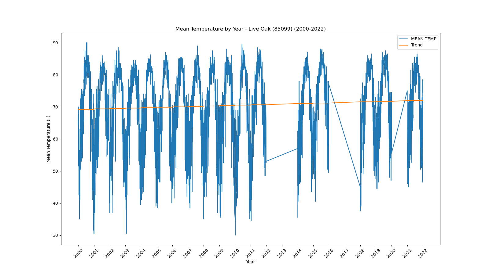</a></div>`)[0];
                popup_11eab0605ed3b27af47186fc490ccfb5.setContent(html_f49eea0b8f87b794c82667b35c70185f);
            
        

        marker_72eedd2ac9d65c0040b38b0fb035e19a.bindPopup(popup_11eab0605ed3b27af47186fc490ccfb5)
        ;

        
    
    
            var marker_d25779676f5a2c3c3a54b7129ef012dd = L.marker(
                [30.48, -83.24],
                {}
            ).addTo(map_d23b6badc06207b568e286b60bd070d9);
        
    
            var icon_19c2d19002223daf21d740bc3a1bf186 = L.AwesomeMarkers.icon(
                {"extraClasses": "fa-rotate-0", "icon": "info-sign", "iconColor": "white", "markerColor": "orange", "prefix": "glyphicon"}
            );
            marker_d25779676f5a2c3c3a54b7129ef012dd.setIcon(icon_19c2d19002223daf21d740bc3a1bf186);
        
    
        var popup_cb00b9cd6f7d4ec272674dc8ebeed4b8 = L.popup({"maxWidth": 1000, "minWidth": 500});

        
            
                var html_d644579ebe01f33617a8c86cf73258af = $(`<div id="html_d644579ebe01f33617a8c86cf73258af" style="width: 100.0%; height: 100.0%;"><b>Madison (85275)</b><br>lat: 30.48, lon: -83.24<br><a href='../../static/img/plots/timeseries/meantemp_daily/85275_2000-2022.png' target='_BLANK'></a></div>`)[0];
                popup_cb00b9cd6f7d4ec272674dc8ebeed4b8.setContent(html_d644579ebe01f33617a8c86cf73258af);
            
        

        marker_d25779676f5a2c3c3a54b7129ef012dd.bindPopup(popup_cb00b9cd6f7d4ec272674dc8ebeed4b8)
        ;

        
    
    
            var marker_270f4fe0af839009805429531bf85c14 = L.marker(
                [30.05, -83.18],
                {}
            ).addTo(map_d23b6badc06207b568e286b60bd070d9);
        
    
            var icon_3fd4bc82dd9d223f6d5f35a165da3101 = L.AwesomeMarkers.icon(
                {"extraClasses": "fa-rotate-0", "icon": "info-sign", "iconColor": "white", "markerColor": "orange", "prefix": "glyphicon"}
            );
            marker_270f4fe0af839009805429531bf85c14.setIcon(icon_3fd4bc82dd9d223f6d5f35a165da3101);
        
    
        var popup_d9b16f575027eead7d8dae5f4e455fd6 = L.popup({"maxWidth": 1000, "minWidth": 500});

        
            
                var html_2ec59210dd8a9a1ec8dd22ab48604796 = $(`<div id="html_2ec59210dd8a9a1ec8dd22ab48604796" style="width: 100.0%; height: 100.0%;"><b>Mayo (85539)</b><br>lat: 30.05, lon: -83.18<br><a href='../../static/img/plots/timeseries/meantemp_daily/85539_2000-2022.png' target='_BLANK'></a></div>`)[0];
                popup_d9b16f575027eead7d8dae5f4e455fd6.setContent(html_2ec59210dd8a9a1ec8dd22ab48604796);
            
        

        marker_270f4fe0af839009805429531bf85c14.bindPopup(popup_d9b16f575027eead7d8dae5f4e455fd6)
        ;

        
    
    
            var marker_05166bd11a988cf0ac367637b76c2c6e = L.marker(
                [28.11, -80.66],
                {}
            ).addTo(map_d23b6badc06207b568e286b60bd070d9);
        
    
            var icon_6ae7cd3f4ac82ee8a98a866b8ab32d08 = L.AwesomeMarkers.icon(
                {"extraClasses": "fa-rotate-0", "icon": "info-sign", "iconColor": "white", "markerColor": "orange", "prefix": "glyphicon"}
            );
            marker_05166bd11a988cf0ac367637b76c2c6e.setIcon(icon_6ae7cd3f4ac82ee8a98a866b8ab32d08);
        
    
        var popup_e61878831c745d8f3534bc88d19ca1fd = L.popup({"maxWidth": 1000, "minWidth": 500});

        
            
                var html_94ada06481f7618afe15cdc6d503d2fa = $(`<div id="html_94ada06481f7618afe15cdc6d503d2fa" style="width: 100.0%; height: 100.0%;"><b>Melbourne WFO (85612)</b><br>lat: 28.11, lon: -80.66<br><a href='../../static/img/plots/timeseries/meantemp_daily/85612_2000-2022.png' target='_BLANK'></a></div>`)[0];
                popup_e61878831c745d8f3534bc88d19ca1fd.setContent(html_94ada06481f7618afe15cdc6d503d2fa);
            
        

        marker_05166bd11a988cf0ac367637b76c2c6e.bindPopup(popup_e61878831c745d8f3534bc88d19ca1fd)
        ;

        
    
    
            var marker_08fb59c4a2f5e25df9be28c7a9529aa0 = L.marker(
                [25.79, -80.14],
                {}
            ).addTo(map_d23b6badc06207b568e286b60bd070d9);
        
    
            var icon_12b4219b8f64fd3a51bc20da22f23471 = L.AwesomeMarkers.icon(
                {"extraClasses": "fa-rotate-0", "icon": "info-sign", "iconColor": "white", "markerColor": "orange", "prefix": "glyphicon"}
            );
            marker_08fb59c4a2f5e25df9be28c7a9529aa0.setIcon(icon_12b4219b8f64fd3a51bc20da22f23471);
        
    
        var popup_17fdedac15c4be5a0ef3401671af6f40 = L.popup({"maxWidth": 1000, "minWidth": 500});

        
            
                var html_139bbf92b645142a7a95b657bb893d97 = $(`<div id="html_139bbf92b645142a7a95b657bb893d97" style="width: 100.0%; height: 100.0%;"><b>Miami Beach (85658)</b><br>lat: 25.79, lon: -80.14<br><a href='../../static/img/plots/timeseries/meantemp_daily/85658_2000-2022.png' target='_BLANK'></a></div>`)[0];
                popup_17fdedac15c4be5a0ef3401671af6f40.setContent(html_139bbf92b645142a7a95b657bb893d97);
            
        

        marker_08fb59c4a2f5e25df9be28c7a9529aa0.bindPopup(popup_17fdedac15c4be5a0ef3401671af6f40)
        ;

        
    
    
            var marker_642da5c41b2a28a632c73d0feed43cca = L.marker(
                [25.79, -80.28],
                {}
            ).addTo(map_d23b6badc06207b568e286b60bd070d9);
        
    
            var icon_9c72ad577eba4d00e2de7c147c672434 = L.AwesomeMarkers.icon(
                {"extraClasses": "fa-rotate-0", "icon": "info-sign", "iconColor": "white", "markerColor": "orange", "prefix": "glyphicon"}
            );
            marker_642da5c41b2a28a632c73d0feed43cca.setIcon(icon_9c72ad577eba4d00e2de7c147c672434);
        
    
        var popup_41f07d01583e7608dc38e43244b2c7cc = L.popup({"maxWidth": 1000, "minWidth": 500});

        
            
                var html_2a7e288b4b19f011693fa9af214be21b = $(`<div id="html_2a7e288b4b19f011693fa9af214be21b" style="width: 100.0%; height: 100.0%;"><b>Miami Intl Airport (85663)</b><br>lat: 25.79, lon: -80.28<br><a href='../../static/img/plots/timeseries/meantemp_daily/85663_2000-2022.png' target='_BLANK'></a></div>`)[0];
                popup_41f07d01583e7608dc38e43244b2c7cc.setContent(html_2a7e288b4b19f011693fa9af214be21b);
            
        

        marker_642da5c41b2a28a632c73d0feed43cca.bindPopup(popup_41f07d01583e7608dc38e43244b2c7cc)
        ;

        
    
    
            var marker_9369c81a2b890ec253da94a60d9bc2e2 = L.marker(
                [30.29, -83.46],
                {}
            ).addTo(map_d23b6badc06207b568e286b60bd070d9);
        
    
            var icon_376e24562044a97833fb5b6cdd4d7f65 = L.AwesomeMarkers.icon(
                {"extraClasses": "fa-rotate-0", "icon": "info-sign", "iconColor": "white", "markerColor": "orange", "prefix": "glyphicon"}
            );
            marker_9369c81a2b890ec253da94a60d9bc2e2.setIcon(icon_376e24562044a97833fb5b6cdd4d7f65);
        
    
        var popup_50c2fa2cc14727e3637113b4d635c4cd = L.popup({"maxWidth": 1000, "minWidth": 500});

        
            
                var html_13174f464a21d9e53e2ec1161be60295 = $(`<div id="html_13174f464a21d9e53e2ec1161be60295" style="width: 100.0%; height: 100.0%;"><b>Monticello 5 SE (85879)</b><br>lat: 30.29, lon: -83.46<br><a href='../../static/img/plots/timeseries/meantemp_daily/85879_2000-2022.png' target='_BLANK'></a></div>`)[0];
                popup_50c2fa2cc14727e3637113b4d635c4cd.setContent(html_13174f464a21d9e53e2ec1161be60295);
            
        

        marker_9369c81a2b890ec253da94a60d9bc2e2.bindPopup(popup_50c2fa2cc14727e3637113b4d635c4cd)
        ;

        
    
    
            var marker_426f431ae9f863361569ab89c984e15a = L.marker(
                [30.55, -83.87],
                {}
            ).addTo(map_d23b6badc06207b568e286b60bd070d9);
        
    
            var icon_bc45af492ed89bd25fc76d5e0a3e0c58 = L.AwesomeMarkers.icon(
                {"extraClasses": "fa-rotate-0", "icon": "info-sign", "iconColor": "white", "markerColor": "orange", "prefix": "glyphicon"}
            );
            marker_426f431ae9f863361569ab89c984e15a.setIcon(icon_bc45af492ed89bd25fc76d5e0a3e0c58);
        
    
        var popup_5673d1c81a9adb3f490e457bf98c5d27 = L.popup({"maxWidth": 1000, "minWidth": 500});

        
            
                var html_7d99e73f0dc5336ab5be0d4f12b91806 = $(`<div id="html_7d99e73f0dc5336ab5be0d4f12b91806" style="width: 100.0%; height: 100.0%;"><b>Monticello 10 SW (85880)</b><br>lat: 30.55, lon: -83.87<br><a href='../../static/img/plots/timeseries/meantemp_daily/85880_2000-2022.png' target='_BLANK'>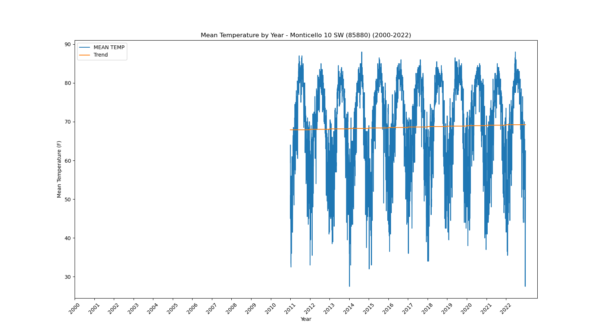</a></div>`)[0];
                popup_5673d1c81a9adb3f490e457bf98c5d27.setContent(html_7d99e73f0dc5336ab5be0d4f12b91806);
            
        

        marker_426f431ae9f863361569ab89c984e15a.bindPopup(popup_5673d1c81a9adb3f490e457bf98c5d27)
        ;

        
    
    
            var marker_c6eae520750ee5add01e74bc50d56cae = L.marker(
                [26.84, -81.09],
                {}
            ).addTo(map_d23b6badc06207b568e286b60bd070d9);
        
    
            var icon_949d959f9138def9cfd1efff5c67de1b = L.AwesomeMarkers.icon(
                {"extraClasses": "fa-rotate-0", "icon": "info-sign", "iconColor": "white", "markerColor": "orange", "prefix": "glyphicon"}
            );
            marker_c6eae520750ee5add01e74bc50d56cae.setIcon(icon_949d959f9138def9cfd1efff5c67de1b);
        
    
        var popup_8c11da90dba7fa6d2bbe409771b4afb4 = L.popup({"maxWidth": 1000, "minWidth": 500});

        
            
                var html_df15b0f7a3dff8b3dfd14c27a69877b7 = $(`<div id="html_df15b0f7a3dff8b3dfd14c27a69877b7" style="width: 100.0%; height: 100.0%;"><b>Moore Haven Lock 1 (85895)</b><br>lat: 26.84, lon: -81.09<br><a href='../../static/img/plots/timeseries/meantemp_daily/85895_2000-2022.png' target='_BLANK'></a></div>`)[0];
                popup_8c11da90dba7fa6d2bbe409771b4afb4.setContent(html_df15b0f7a3dff8b3dfd14c27a69877b7);
            
        

        marker_c6eae520750ee5add01e74bc50d56cae.bindPopup(popup_8c11da90dba7fa6d2bbe409771b4afb4)
        ;

        
    
    
            var marker_4799263198401bb33f186695edb06d59 = L.marker(
                [27.93, -81.59],
                {}
            ).addTo(map_d23b6badc06207b568e286b60bd070d9);
        
    
            var icon_9815400f8603e66c097eb5641f1f8494 = L.AwesomeMarkers.icon(
                {"extraClasses": "fa-rotate-0", "icon": "info-sign", "iconColor": "white", "markerColor": "orange", "prefix": "glyphicon"}
            );
            marker_4799263198401bb33f186695edb06d59.setIcon(icon_9815400f8603e66c097eb5641f1f8494);
        
    
        var popup_002a3646ebc707f38ab50c8da00d9415 = L.popup({"maxWidth": 1000, "minWidth": 500});

        
            
                var html_b9814b16cc0dc0bdac4045ea6f6d4ba6 = $(`<div id="html_b9814b16cc0dc0bdac4045ea6f6d4ba6" style="width: 100.0%; height: 100.0%;"><b>Mountain Lake (85973)</b><br>lat: 27.93, lon: -81.59<br><a href='../../static/img/plots/timeseries/meantemp_daily/85973_2000-2022.png' target='_BLANK'></a></div>`)[0];
                popup_002a3646ebc707f38ab50c8da00d9415.setContent(html_b9814b16cc0dc0bdac4045ea6f6d4ba6);
            
        

        marker_4799263198401bb33f186695edb06d59.bindPopup(popup_002a3646ebc707f38ab50c8da00d9415)
        ;

        
    
    
            var marker_591827eaa6f2b3393831514c19663215 = L.marker(
                [27.2, -82.25],
                {}
            ).addTo(map_d23b6badc06207b568e286b60bd070d9);
        
    
            var icon_0093bc9abc588922b6d702c35e1294bd = L.AwesomeMarkers.icon(
                {"extraClasses": "fa-rotate-0", "icon": "info-sign", "iconColor": "white", "markerColor": "orange", "prefix": "glyphicon"}
            );
            marker_591827eaa6f2b3393831514c19663215.setIcon(icon_0093bc9abc588922b6d702c35e1294bd);
        
    
        var popup_cc69c206153bce7fc9a239fcdf003d87 = L.popup({"maxWidth": 1000, "minWidth": 500});

        
            
                var html_3782ab4d35f69227be30e8ff8e6e5a28 = $(`<div id="html_3782ab4d35f69227be30e8ff8e6e5a28" style="width: 100.0%; height: 100.0%;"><b>Myakka River State Park (86065)</b><br>lat: 27.2, lon: -82.25<br><a href='../../static/img/plots/timeseries/meantemp_daily/86065_2000-2022.png' target='_BLANK'></a></div>`)[0];
                popup_cc69c206153bce7fc9a239fcdf003d87.setContent(html_3782ab4d35f69227be30e8ff8e6e5a28);
            
        

        marker_591827eaa6f2b3393831514c19663215.bindPopup(popup_cc69c206153bce7fc9a239fcdf003d87)
        ;

        
    
    
            var marker_f8625ec443a529d163a30779448217b4 = L.marker(
                [26.15, -81.77],
                {}
            ).addTo(map_d23b6badc06207b568e286b60bd070d9);
        
    
            var icon_28e5d14081e75283ae15ea7850afd01e = L.AwesomeMarkers.icon(
                {"extraClasses": "fa-rotate-0", "icon": "info-sign", "iconColor": "white", "markerColor": "blue", "prefix": "glyphicon"}
            );
            marker_f8625ec443a529d163a30779448217b4.setIcon(icon_28e5d14081e75283ae15ea7850afd01e);
        
    
        var popup_e0b46311353d06a9b84e3c7ac6ac9200 = L.popup({"maxWidth": 1000, "minWidth": 500});

        
            
                var html_967273e724f4995b9253de5aad26ea91 = $(`<div id="html_967273e724f4995b9253de5aad26ea91" style="width: 100.0%; height: 100.0%;"><b>Naples (86078)</b><br>lat: 26.15, lon: -81.77<br><a href='../../static/img/plots/timeseries/meantemp_daily/86078_2000-2022.png' target='_BLANK'></a></div>`)[0];
                popup_e0b46311353d06a9b84e3c7ac6ac9200.setContent(html_967273e724f4995b9253de5aad26ea91);
            
        

        marker_f8625ec443a529d163a30779448217b4.bindPopup(popup_e0b46311353d06a9b84e3c7ac6ac9200)
        ;

        
    
    
            var marker_9254074a8c8f029e98e046ea4e45da8e = L.marker(
                [30.52, -86.48],
                {}
            ).addTo(map_d23b6badc06207b568e286b60bd070d9);
        
    
            var icon_e62a8285e662ab4f35f4ff957f2bf9d5 = L.AwesomeMarkers.icon(
                {"extraClasses": "fa-rotate-0", "icon": "info-sign", "iconColor": "white", "markerColor": "orange", "prefix": "glyphicon"}
            );
            marker_9254074a8c8f029e98e046ea4e45da8e.setIcon(icon_e62a8285e662ab4f35f4ff957f2bf9d5);
        
    
        var popup_e1476e2f3a024abb3e646540c751aef2 = L.popup({"maxWidth": 1000, "minWidth": 500});

        
            
                var html_c4cc4ebf6e34283b8667e4a28ec1bf15 = $(`<div id="html_c4cc4ebf6e34283b8667e4a28ec1bf15" style="width: 100.0%; height: 100.0%;"><b>Niceville (86240)</b><br>lat: 30.52, lon: -86.48<br><a href='../../static/img/plots/timeseries/meantemp_daily/86240_2000-2022.png' target='_BLANK'></a></div>`)[0];
                popup_e1476e2f3a024abb3e646540c751aef2.setContent(html_c4cc4ebf6e34283b8667e4a28ec1bf15);
            
        

        marker_9254074a8c8f029e98e046ea4e45da8e.bindPopup(popup_e1476e2f3a024abb3e646540c751aef2)
        ;

        
    
    
            var marker_53acc95b1b5f90e204badd88ab3b8f20 = L.marker(
                [25.86, -81.03],
                {}
            ).addTo(map_d23b6badc06207b568e286b60bd070d9);
        
    
            var icon_11c7a208dc931c59eb7ab23548663277 = L.AwesomeMarkers.icon(
                {"extraClasses": "fa-rotate-0", "icon": "info-sign", "iconColor": "white", "markerColor": "blue", "prefix": "glyphicon"}
            );
            marker_53acc95b1b5f90e204badd88ab3b8f20.setIcon(icon_11c7a208dc931c59eb7ab23548663277);
        
    
        var popup_55dc5ba1b4c07cb95766475a19519451 = L.popup({"maxWidth": 1000, "minWidth": 500});

        
            
                var html_89087e6682954bf67ab87af3f188c761 = $(`<div id="html_89087e6682954bf67ab87af3f188c761" style="width: 100.0%; height: 100.0%;"><b>Oasis Ranger Station (86406)</b><br>lat: 25.86, lon: -81.03<br><a href='../../static/img/plots/timeseries/meantemp_daily/86406_2000-2022.png' target='_BLANK'></a></div>`)[0];
                popup_55dc5ba1b4c07cb95766475a19519451.setContent(html_89087e6682954bf67ab87af3f188c761);
            
        

        marker_53acc95b1b5f90e204badd88ab3b8f20.bindPopup(popup_55dc5ba1b4c07cb95766475a19519451)
        ;

        
    
    
            var marker_2066e9c780d0b03ad21e6109261bee1e = L.marker(
                [29.19, -82.14],
                {}
            ).addTo(map_d23b6badc06207b568e286b60bd070d9);
        
    
            var icon_204dea25568719ce23c9fa5d61d78682 = L.AwesomeMarkers.icon(
                {"extraClasses": "fa-rotate-0", "icon": "info-sign", "iconColor": "white", "markerColor": "orange", "prefix": "glyphicon"}
            );
            marker_2066e9c780d0b03ad21e6109261bee1e.setIcon(icon_204dea25568719ce23c9fa5d61d78682);
        
    
        var popup_82c684ae1b95081e6948bd731dedbfea = L.popup({"maxWidth": 1000, "minWidth": 500});

        
            
                var html_8b39caf5179d70f53d5e7731774c3a2f = $(`<div id="html_8b39caf5179d70f53d5e7731774c3a2f" style="width: 100.0%; height: 100.0%;"><b>Ocala (86414)</b><br>lat: 29.19, lon: -82.14<br><a href='../../static/img/plots/timeseries/meantemp_daily/86414_2000-2022.png' target='_BLANK'></a></div>`)[0];
                popup_82c684ae1b95081e6948bd731dedbfea.setContent(html_8b39caf5179d70f53d5e7731774c3a2f);
            
        

        marker_2066e9c780d0b03ad21e6109261bee1e.bindPopup(popup_82c684ae1b95081e6948bd731dedbfea)
        ;

        
    
    
            var marker_e154e77c783fb8843c066631b606c6a0 = L.marker(
                [27.24, -80.83],
                {}
            ).addTo(map_d23b6badc06207b568e286b60bd070d9);
        
    
            var icon_8aa4938ad8dffb96df94283576bf49b8 = L.AwesomeMarkers.icon(
                {"extraClasses": "fa-rotate-0", "icon": "info-sign", "iconColor": "white", "markerColor": "blue", "prefix": "glyphicon"}
            );
            marker_e154e77c783fb8843c066631b606c6a0.setIcon(icon_8aa4938ad8dffb96df94283576bf49b8);
        
    
        var popup_55a15abe9ed2ccba6e04bec8fdbf6480 = L.popup({"maxWidth": 1000, "minWidth": 500});

        
            
                var html_7636d84971bd93c26ef053713ee85fa8 = $(`<div id="html_7636d84971bd93c26ef053713ee85fa8" style="width: 100.0%; height: 100.0%;"><b>Okeechobee (86485)</b><br>lat: 27.24, lon: -80.83<br><a href='../../static/img/plots/timeseries/meantemp_daily/86485_2000-2022.png' target='_BLANK'></a></div>`)[0];
                popup_55a15abe9ed2ccba6e04bec8fdbf6480.setContent(html_7636d84971bd93c26ef053713ee85fa8);
            
        

        marker_e154e77c783fb8843c066631b606c6a0.bindPopup(popup_55a15abe9ed2ccba6e04bec8fdbf6480)
        ;

        
    
    
            var marker_202d8ece4e3428f0aeb493ff258e8454 = L.marker(
                [28.43, -81.31],
                {}
            ).addTo(map_d23b6badc06207b568e286b60bd070d9);
        
    
            var icon_6c5963f3931d4870821e542999d29c82 = L.AwesomeMarkers.icon(
                {"extraClasses": "fa-rotate-0", "icon": "info-sign", "iconColor": "white", "markerColor": "orange", "prefix": "glyphicon"}
            );
            marker_202d8ece4e3428f0aeb493ff258e8454.setIcon(icon_6c5963f3931d4870821e542999d29c82);
        
    
        var popup_328ea4493632a9a21426c328d832cb2c = L.popup({"maxWidth": 1000, "minWidth": 500});

        
            
                var html_b949c401dfe9c443a8628be20c33ccf8 = $(`<div id="html_b949c401dfe9c443a8628be20c33ccf8" style="width: 100.0%; height: 100.0%;"><b>Orlando Intl Airport (86628)</b><br>lat: 28.43, lon: -81.31<br><a href='../../static/img/plots/timeseries/meantemp_daily/86628_2000-2022.png' target='_BLANK'></a></div>`)[0];
                popup_328ea4493632a9a21426c328d832cb2c.setContent(html_b949c401dfe9c443a8628be20c33ccf8);
            
        

        marker_202d8ece4e3428f0aeb493ff258e8454.bindPopup(popup_328ea4493632a9a21426c328d832cb2c)
        ;

        
    
    
            var marker_c2310015b220f22a575d7ebefb6a7935 = L.marker(
                [30.18, -85.67],
                {}
            ).addTo(map_d23b6badc06207b568e286b60bd070d9);
        
    
            var icon_ff6f9c9a7a26fb756e8a3176b4700f67 = L.AwesomeMarkers.icon(
                {"extraClasses": "fa-rotate-0", "icon": "info-sign", "iconColor": "white", "markerColor": "orange", "prefix": "glyphicon"}
            );
            marker_c2310015b220f22a575d7ebefb6a7935.setIcon(icon_ff6f9c9a7a26fb756e8a3176b4700f67);
        
    
        var popup_547d40bfaf43f94dc0852ced6a0a4e1b = L.popup({"maxWidth": 1000, "minWidth": 500});

        
            
                var html_c41487e79a1b6c67c97c10110f2b76d1 = $(`<div id="html_c41487e79a1b6c67c97c10110f2b76d1" style="width: 100.0%; height: 100.0%;"><b>Panama City 5N (86842)</b><br>lat: 30.18, lon: -85.67<br><a href='../../static/img/plots/timeseries/meantemp_daily/86842_2000-2022.png' target='_BLANK'></a></div>`)[0];
                popup_547d40bfaf43f94dc0852ced6a0a4e1b.setContent(html_c41487e79a1b6c67c97c10110f2b76d1);
            
        

        marker_c2310015b220f22a575d7ebefb6a7935.bindPopup(popup_547d40bfaf43f94dc0852ced6a0a4e1b)
        ;

        
    
    
            var marker_38fb1ec55755a94fd83c86b1ce6ccdf9 = L.marker(
                [27.59, -82.43],
                {}
            ).addTo(map_d23b6badc06207b568e286b60bd070d9);
        
    
            var icon_83cb979ea67ed0d5575cd479c0be9267 = L.AwesomeMarkers.icon(
                {"extraClasses": "fa-rotate-0", "icon": "info-sign", "iconColor": "white", "markerColor": "orange", "prefix": "glyphicon"}
            );
            marker_38fb1ec55755a94fd83c86b1ce6ccdf9.setIcon(icon_83cb979ea67ed0d5575cd479c0be9267);
        
    
        var popup_a53115789662654dc1577ae46c4e6a26 = L.popup({"maxWidth": 1000, "minWidth": 500});

        
            
                var html_08956ed791da10dd663e7ac3c47c61f3 = $(`<div id="html_08956ed791da10dd663e7ac3c47c61f3" style="width: 100.0%; height: 100.0%;"><b>Parrish (86880)</b><br>lat: 27.59, lon: -82.43<br><a href='../../static/img/plots/timeseries/meantemp_daily/86880_2000-2022.png' target='_BLANK'></a></div>`)[0];
                popup_a53115789662654dc1577ae46c4e6a26.setContent(html_08956ed791da10dd663e7ac3c47c61f3);
            
        

        marker_38fb1ec55755a94fd83c86b1ce6ccdf9.bindPopup(popup_a53115789662654dc1577ae46c4e6a26)
        ;

        
    
    
            var marker_80eb89963aba89f4cc95ef86508dc7b8 = L.marker(
                [30.48, -87.19],
                {}
            ).addTo(map_d23b6badc06207b568e286b60bd070d9);
        
    
            var icon_4fc0b63282a3df4c17dcefc2c441c962 = L.AwesomeMarkers.icon(
                {"extraClasses": "fa-rotate-0", "icon": "info-sign", "iconColor": "white", "markerColor": "orange", "prefix": "glyphicon"}
            );
            marker_80eb89963aba89f4cc95ef86508dc7b8.setIcon(icon_4fc0b63282a3df4c17dcefc2c441c962);
        
    
        var popup_0a10dbfefbb7fbe1748ecd54c23ccd54 = L.popup({"maxWidth": 1000, "minWidth": 500});

        
            
                var html_49dbdc9e8d5d602e87e267d6edf86ed5 = $(`<div id="html_49dbdc9e8d5d602e87e267d6edf86ed5" style="width: 100.0%; height: 100.0%;"><b>Pensacola Regional Airport (86997)</b><br>lat: 30.48, lon: -87.19<br><a href='../../static/img/plots/timeseries/meantemp_daily/86997_2000-2022.png' target='_BLANK'></a></div>`)[0];
                popup_0a10dbfefbb7fbe1748ecd54c23ccd54.setContent(html_49dbdc9e8d5d602e87e267d6edf86ed5);
            
        

        marker_80eb89963aba89f4cc95ef86508dc7b8.bindPopup(popup_0a10dbfefbb7fbe1748ecd54c23ccd54)
        ;

        
    
    
            var marker_8c276dd338d446bc252cc8d4e297cd81 = L.marker(
                [25.59, -80.36],
                {}
            ).addTo(map_d23b6badc06207b568e286b60bd070d9);
        
    
            var icon_f7d937aae56f7a9c5893770a2ca50b10 = L.AwesomeMarkers.icon(
                {"extraClasses": "fa-rotate-0", "icon": "info-sign", "iconColor": "white", "markerColor": "orange", "prefix": "glyphicon"}
            );
            marker_8c276dd338d446bc252cc8d4e297cd81.setIcon(icon_f7d937aae56f7a9c5893770a2ca50b10);
        
    
        var popup_41d6df37dd69f256a58d7b65a11adf7e = L.popup({"maxWidth": 1000, "minWidth": 500});

        
            
                var html_78b71705cdb7097538736ca59cd17efe = $(`<div id="html_78b71705cdb7097538736ca59cd17efe" style="width: 100.0%; height: 100.0%;"><b>Perrine 4W (87020)</b><br>lat: 25.59, lon: -80.36<br><a href='../../static/img/plots/timeseries/meantemp_daily/87020_2000-2022.png' target='_BLANK'></a></div>`)[0];
                popup_41d6df37dd69f256a58d7b65a11adf7e.setContent(html_78b71705cdb7097538736ca59cd17efe);
            
        

        marker_8c276dd338d446bc252cc8d4e297cd81.bindPopup(popup_41d6df37dd69f256a58d7b65a11adf7e)
        ;

        
    
    
            var marker_3786c18e51e46f09f21c8af584f0db0b = L.marker(
                [30.11, -83.58],
                {}
            ).addTo(map_d23b6badc06207b568e286b60bd070d9);
        
    
            var icon_5e26e5a2c849a0594b1b222b7c07bb0f = L.AwesomeMarkers.icon(
                {"extraClasses": "fa-rotate-0", "icon": "info-sign", "iconColor": "white", "markerColor": "orange", "prefix": "glyphicon"}
            );
            marker_3786c18e51e46f09f21c8af584f0db0b.setIcon(icon_5e26e5a2c849a0594b1b222b7c07bb0f);
        
    
        var popup_51b07da772f3c0ced851e7f68571fd99 = L.popup({"maxWidth": 1000, "minWidth": 500});

        
            
                var html_3e2f922f2ffc26e718c387d82b473cc4 = $(`<div id="html_3e2f922f2ffc26e718c387d82b473cc4" style="width: 100.0%; height: 100.0%;"><b>Perry (87025)</b><br>lat: 30.11, lon: -83.58<br><a href='../../static/img/plots/timeseries/meantemp_daily/87025_2000-2022.png' target='_BLANK'></a></div>`)[0];
                popup_51b07da772f3c0ced851e7f68571fd99.setContent(html_3e2f922f2ffc26e718c387d82b473cc4);
            
        

        marker_3786c18e51e46f09f21c8af584f0db0b.bindPopup(popup_51b07da772f3c0ced851e7f68571fd99)
        ;

        
    
    
            var marker_90e817206fa61c8d4a383e6bc09e2e56 = L.marker(
                [28.01, -82.16],
                {}
            ).addTo(map_d23b6badc06207b568e286b60bd070d9);
        
    
            var icon_8d00d1dbba23c64af3de0f5cce0e5f7d = L.AwesomeMarkers.icon(
                {"extraClasses": "fa-rotate-0", "icon": "info-sign", "iconColor": "white", "markerColor": "orange", "prefix": "glyphicon"}
            );
            marker_90e817206fa61c8d4a383e6bc09e2e56.setIcon(icon_8d00d1dbba23c64af3de0f5cce0e5f7d);
        
    
        var popup_1e44e5eb60b2a27157fa4fd7f7aa18e5 = L.popup({"maxWidth": 1000, "minWidth": 500});

        
            
                var html_75cd2e5b82ce4d0ac5ff0fc910c908cc = $(`<div id="html_75cd2e5b82ce4d0ac5ff0fc910c908cc" style="width: 100.0%; height: 100.0%;"><b>Plant City (87205)</b><br>lat: 28.01, lon: -82.16<br><a href='../../static/img/plots/timeseries/meantemp_daily/87205_2000-2022.png' target='_BLANK'></a></div>`)[0];
                popup_1e44e5eb60b2a27157fa4fd7f7aa18e5.setContent(html_75cd2e5b82ce4d0ac5ff0fc910c908cc);
            
        

        marker_90e817206fa61c8d4a383e6bc09e2e56.bindPopup(popup_1e44e5eb60b2a27157fa4fd7f7aa18e5)
        ;

        
    
    
            var marker_ebc515f02ea1a88b9257e17ad5450b5b = L.marker(
                [26.92, -82.0],
                {}
            ).addTo(map_d23b6badc06207b568e286b60bd070d9);
        
    
            var icon_3bab26de138d2fdbc60afbfa869d16f4 = L.AwesomeMarkers.icon(
                {"extraClasses": "fa-rotate-0", "icon": "info-sign", "iconColor": "white", "markerColor": "orange", "prefix": "glyphicon"}
            );
            marker_ebc515f02ea1a88b9257e17ad5450b5b.setIcon(icon_3bab26de138d2fdbc60afbfa869d16f4);
        
    
        var popup_d26dba688b718c7ee2936e19ff1d731d = L.popup({"maxWidth": 1000, "minWidth": 500});

        
            
                var html_6c3ad6e812f7183f030cd6feb4a90ccd = $(`<div id="html_6c3ad6e812f7183f030cd6feb4a90ccd" style="width: 100.0%; height: 100.0%;"><b>Punta Gorda 4 ESE (87397)</b><br>lat: 26.92, lon: -82<br><a href='../../static/img/plots/timeseries/meantemp_daily/87397_2000-2022.png' target='_BLANK'></a></div>`)[0];
                popup_d26dba688b718c7ee2936e19ff1d731d.setContent(html_6c3ad6e812f7183f030cd6feb4a90ccd);
            
        

        marker_ebc515f02ea1a88b9257e17ad5450b5b.bindPopup(popup_d26dba688b718c7ee2936e19ff1d731d)
        ;

        
    
    
            var marker_34b10b63a813537b8bf10d349e511216 = L.marker(
                [30.59, -84.59],
                {}
            ).addTo(map_d23b6badc06207b568e286b60bd070d9);
        
    
            var icon_8354395caeca9019d0a6eb5ecb525f72 = L.AwesomeMarkers.icon(
                {"extraClasses": "fa-rotate-0", "icon": "info-sign", "iconColor": "white", "markerColor": "blue", "prefix": "glyphicon"}
            );
            marker_34b10b63a813537b8bf10d349e511216.setIcon(icon_8354395caeca9019d0a6eb5ecb525f72);
        
    
        var popup_93d8c7bc153068f4339e784ff5fd1f21 = L.popup({"maxWidth": 1000, "minWidth": 500});

        
            
                var html_03461aa555d3a1e81180f25e355ff1ff = $(`<div id="html_03461aa555d3a1e81180f25e355ff1ff" style="width: 100.0%; height: 100.0%;"><b>Quincy 3 SSW (87429)</b><br>lat: 30.59, lon: -84.59<br><a href='../../static/img/plots/timeseries/meantemp_daily/87429_2000-2022.png' target='_BLANK'></a></div>`)[0];
                popup_93d8c7bc153068f4339e784ff5fd1f21.setContent(html_03461aa555d3a1e81180f25e355ff1ff);
            
        

        marker_34b10b63a813537b8bf10d349e511216.bindPopup(popup_93d8c7bc153068f4339e784ff5fd1f21)
        ;

        
    
    
            var marker_0b78501eab9976c32629c9ce8083a365 = L.marker(
                [25.38, -80.61],
                {}
            ).addTo(map_d23b6badc06207b568e286b60bd070d9);
        
    
            var icon_63cf290c00c8acd9f1917335c1485735 = L.AwesomeMarkers.icon(
                {"extraClasses": "fa-rotate-0", "icon": "info-sign", "iconColor": "white", "markerColor": "orange", "prefix": "glyphicon"}
            );
            marker_0b78501eab9976c32629c9ce8083a365.setIcon(icon_63cf290c00c8acd9f1917335c1485735);
        
    
        var popup_a2b046525dc994d9b91fca57fa998572 = L.popup({"maxWidth": 1000, "minWidth": 500});

        
            
                var html_2b33b921fa622f91d25baf104362ca66 = $(`<div id="html_2b33b921fa622f91d25baf104362ca66" style="width: 100.0%; height: 100.0%;"><b>Royal Palm Ranger Station (87760)</b><br>lat: 25.38, lon: -80.61<br><a href='../../static/img/plots/timeseries/meantemp_daily/87760_2000-2022.png' target='_BLANK'></a></div>`)[0];
                popup_a2b046525dc994d9b91fca57fa998572.setContent(html_2b33b921fa622f91d25baf104362ca66);
            
        

        marker_0b78501eab9976c32629c9ce8083a365.bindPopup(popup_a2b046525dc994d9b91fca57fa998572)
        ;

        
    
    
            var marker_fed031db40f13333421d924a2ad535a4 = L.marker(
                [29.89, -81.29],
                {}
            ).addTo(map_d23b6badc06207b568e286b60bd070d9);
        
    
            var icon_3ed104cdb2128ef1b351ae6ae721f23e = L.AwesomeMarkers.icon(
                {"extraClasses": "fa-rotate-0", "icon": "info-sign", "iconColor": "white", "markerColor": "orange", "prefix": "glyphicon"}
            );
            marker_fed031db40f13333421d924a2ad535a4.setIcon(icon_3ed104cdb2128ef1b351ae6ae721f23e);
        
    
        var popup_d5bc2f2893e09e916ae52ae81730a17e = L.popup({"maxWidth": 1000, "minWidth": 500});

        
            
                var html_f5b75cbdc2d48e51022c11f9353a835d = $(`<div id="html_f5b75cbdc2d48e51022c11f9353a835d" style="width: 100.0%; height: 100.0%;"><b>St. Augustine Lighthouse (87826)</b><br>lat: 29.89, lon: -81.29<br><a href='../../static/img/plots/timeseries/meantemp_daily/87826_2000-2022.png' target='_BLANK'></a></div>`)[0];
                popup_d5bc2f2893e09e916ae52ae81730a17e.setContent(html_f5b75cbdc2d48e51022c11f9353a835d);
            
        

        marker_fed031db40f13333421d924a2ad535a4.bindPopup(popup_d5bc2f2893e09e916ae52ae81730a17e)
        ;

        
    
    
            var marker_ae53def9a74ffe50738b59b7e69e9403 = L.marker(
                [28.34, -82.26],
                {}
            ).addTo(map_d23b6badc06207b568e286b60bd070d9);
        
    
            var icon_c34a7adc8587a3f96bc4d1653581d73a = L.AwesomeMarkers.icon(
                {"extraClasses": "fa-rotate-0", "icon": "info-sign", "iconColor": "white", "markerColor": "orange", "prefix": "glyphicon"}
            );
            marker_ae53def9a74ffe50738b59b7e69e9403.setIcon(icon_c34a7adc8587a3f96bc4d1653581d73a);
        
    
        var popup_7086b1c3f214dcd69cf00cff56bad811 = L.popup({"maxWidth": 1000, "minWidth": 500});

        
            
                var html_77650889294080b3fd03187066f572ca = $(`<div id="html_77650889294080b3fd03187066f572ca" style="width: 100.0%; height: 100.0%;"><b>Sain Leo (87851)</b><br>lat: 28.34, lon: -82.26<br><a href='../../static/img/plots/timeseries/meantemp_daily/87851_2000-2022.png' target='_BLANK'></a></div>`)[0];
                popup_7086b1c3f214dcd69cf00cff56bad811.setContent(html_77650889294080b3fd03187066f572ca);
            
        

        marker_ae53def9a74ffe50738b59b7e69e9403.bindPopup(popup_7086b1c3f214dcd69cf00cff56bad811)
        ;

        
    
    
            var marker_063950dc7f1e296fddd6afb0cd14248e = L.marker(
                [27.91, -82.69],
                {}
            ).addTo(map_d23b6badc06207b568e286b60bd070d9);
        
    
            var icon_f76403cc489bcfd1cde23d96e32e4369 = L.AwesomeMarkers.icon(
                {"extraClasses": "fa-rotate-0", "icon": "info-sign", "iconColor": "white", "markerColor": "orange", "prefix": "glyphicon"}
            );
            marker_063950dc7f1e296fddd6afb0cd14248e.setIcon(icon_f76403cc489bcfd1cde23d96e32e4369);
        
    
        var popup_b29745c03cc83c02e09a15012f772d47 = L.popup({"maxWidth": 1000, "minWidth": 500});

        
            
                var html_e4311035c0403d7012409a1898d1da20 = $(`<div id="html_e4311035c0403d7012409a1898d1da20" style="width: 100.0%; height: 100.0%;"><b>St. Petersburg Airport (87886)</b><br>lat: 27.91, lon: -82.69<br><a href='../../static/img/plots/timeseries/meantemp_daily/87886_2000-2022.png' target='_BLANK'></a></div>`)[0];
                popup_b29745c03cc83c02e09a15012f772d47.setContent(html_e4311035c0403d7012409a1898d1da20);
            
        

        marker_063950dc7f1e296fddd6afb0cd14248e.bindPopup(popup_b29745c03cc83c02e09a15012f772d47)
        ;

        
    
    
            var marker_43961d6c917cee15f0fd73ab65b20255 = L.marker(
                [28.78, -81.24],
                {}
            ).addTo(map_d23b6badc06207b568e286b60bd070d9);
        
    
            var icon_e2de959c472980ce3fcadf08aac5fbb0 = L.AwesomeMarkers.icon(
                {"extraClasses": "fa-rotate-0", "icon": "info-sign", "iconColor": "white", "markerColor": "orange", "prefix": "glyphicon"}
            );
            marker_43961d6c917cee15f0fd73ab65b20255.setIcon(icon_e2de959c472980ce3fcadf08aac5fbb0);
        
    
        var popup_8c4620b470882fb8694f1cfaa2eb781f = L.popup({"maxWidth": 1000, "minWidth": 500});

        
            
                var html_14f9fcc635e13102280979e606ba0745 = $(`<div id="html_14f9fcc635e13102280979e606ba0745" style="width: 100.0%; height: 100.0%;"><b>Sanford (87982)</b><br>lat: 28.78, lon: -81.24<br><a href='../../static/img/plots/timeseries/meantemp_daily/87982_2000-2022.png' target='_BLANK'></a></div>`)[0];
                popup_8c4620b470882fb8694f1cfaa2eb781f.setContent(html_14f9fcc635e13102280979e606ba0745);
            
        

        marker_43961d6c917cee15f0fd73ab65b20255.bindPopup(popup_8c4620b470882fb8694f1cfaa2eb781f)
        ;

        
    
    
            var marker_0f0b604a3c9051667a9c60906eb36751 = L.marker(
                [27.2, -80.25],
                {}
            ).addTo(map_d23b6badc06207b568e286b60bd070d9);
        
    
            var icon_f261ec8132b3bf3c8c4e1b3df44a4308 = L.AwesomeMarkers.icon(
                {"extraClasses": "fa-rotate-0", "icon": "info-sign", "iconColor": "white", "markerColor": "orange", "prefix": "glyphicon"}
            );
            marker_0f0b604a3c9051667a9c60906eb36751.setIcon(icon_f261ec8132b3bf3c8c4e1b3df44a4308);
        
    
        var popup_2d2fb2db2d5097b53e2b955b0054fc68 = L.popup({"maxWidth": 1000, "minWidth": 500});

        
            
                var html_f3168b87a4933cc55a00200a93ed8e2c = $(`<div id="html_f3168b87a4933cc55a00200a93ed8e2c" style="width: 100.0%; height: 100.0%;"><b>Stuart (88620)</b><br>lat: 27.2, lon: -80.25<br><a href='../../static/img/plots/timeseries/meantemp_daily/88620_2000-2022.png' target='_BLANK'></a></div>`)[0];
                popup_2d2fb2db2d5097b53e2b955b0054fc68.setContent(html_f3168b87a4933cc55a00200a93ed8e2c);
            
        

        marker_0f0b604a3c9051667a9c60906eb36751.bindPopup(popup_2d2fb2db2d5097b53e2b955b0054fc68)
        ;

        
    
    
            var marker_14b1f74e86265dd6229098ec0f8694d9 = L.marker(
                [30.39, -84.35],
                {}
            ).addTo(map_d23b6badc06207b568e286b60bd070d9);
        
    
            var icon_cd4f221abee94b07d25f61e0dfcf5049 = L.AwesomeMarkers.icon(
                {"extraClasses": "fa-rotate-0", "icon": "info-sign", "iconColor": "white", "markerColor": "orange", "prefix": "glyphicon"}
            );
            marker_14b1f74e86265dd6229098ec0f8694d9.setIcon(icon_cd4f221abee94b07d25f61e0dfcf5049);
        
    
        var popup_9901ee99663b270c2e72d45f746c1003 = L.popup({"maxWidth": 1000, "minWidth": 500});

        
            
                var html_0c110f9e1f53805a79b56f8a45d9c5c1 = $(`<div id="html_0c110f9e1f53805a79b56f8a45d9c5c1" style="width: 100.0%; height: 100.0%;"><b>Tallahassee Regional Airport (88758)</b><br>lat: 30.39, lon: -84.35<br><a href='../../static/img/plots/timeseries/meantemp_daily/88758_2000-2022.png' target='_BLANK'></a></div>`)[0];
                popup_9901ee99663b270c2e72d45f746c1003.setContent(html_0c110f9e1f53805a79b56f8a45d9c5c1);
            
        

        marker_14b1f74e86265dd6229098ec0f8694d9.bindPopup(popup_9901ee99663b270c2e72d45f746c1003)
        ;

        
    
    
            var marker_72de4ec8b5d7be256e4d06218830b88c = L.marker(
                [27.98, -82.53],
                {}
            ).addTo(map_d23b6badc06207b568e286b60bd070d9);
        
    
            var icon_b0ef0de3f0cc0686830a3fce9c2bf98e = L.AwesomeMarkers.icon(
                {"extraClasses": "fa-rotate-0", "icon": "info-sign", "iconColor": "white", "markerColor": "orange", "prefix": "glyphicon"}
            );
            marker_72de4ec8b5d7be256e4d06218830b88c.setIcon(icon_b0ef0de3f0cc0686830a3fce9c2bf98e);
        
    
        var popup_754cd3259d568536c197babcd6126082 = L.popup({"maxWidth": 1000, "minWidth": 500});

        
            
                var html_6fc209f18eb4495d4ca727299b9066e2 = $(`<div id="html_6fc209f18eb4495d4ca727299b9066e2" style="width: 100.0%; height: 100.0%;"><b>Tampa Intl Airport (88788)</b><br>lat: 27.98, lon: -82.53<br><a href='../../static/img/plots/timeseries/meantemp_daily/88788_2000-2022.png' target='_BLANK'></a></div>`)[0];
                popup_754cd3259d568536c197babcd6126082.setContent(html_6fc209f18eb4495d4ca727299b9066e2);
            
        

        marker_72de4ec8b5d7be256e4d06218830b88c.bindPopup(popup_754cd3259d568536c197babcd6126082)
        ;

        
    
    
            var marker_d12e9b60a579d1e4873f5a3e38622776 = L.marker(
                [28.15, -82.75],
                {}
            ).addTo(map_d23b6badc06207b568e286b60bd070d9);
        
    
            var icon_3c2d4edce32eee0b75875dcae8a1ea75 = L.AwesomeMarkers.icon(
                {"extraClasses": "fa-rotate-0", "icon": "info-sign", "iconColor": "white", "markerColor": "orange", "prefix": "glyphicon"}
            );
            marker_d12e9b60a579d1e4873f5a3e38622776.setIcon(icon_3c2d4edce32eee0b75875dcae8a1ea75);
        
    
        var popup_66aafd92781c4c92219cca4ebfed3dad = L.popup({"maxWidth": 1000, "minWidth": 500});

        
            
                var html_406b0bef8ccb803515ef44dc443bf2ec = $(`<div id="html_406b0bef8ccb803515ef44dc443bf2ec" style="width: 100.0%; height: 100.0%;"><b>Tarpon Springs Sewage Plant (88824)</b><br>lat: 28.15, lon: -82.75<br><a href='../../static/img/plots/timeseries/meantemp_daily/88824_2000-2022.png' target='_BLANK'></a></div>`)[0];
                popup_66aafd92781c4c92219cca4ebfed3dad.setContent(html_406b0bef8ccb803515ef44dc443bf2ec);
            
        

        marker_d12e9b60a579d1e4873f5a3e38622776.bindPopup(popup_66aafd92781c4c92219cca4ebfed3dad)
        ;

        
    
    
            var marker_0fbd4a0a326587d9ae7df96a134b05f4 = L.marker(
                [28.61, -80.82],
                {}
            ).addTo(map_d23b6badc06207b568e286b60bd070d9);
        
    
            var icon_cbb8547dba9abe9f3dca8ed80d959b60 = L.AwesomeMarkers.icon(
                {"extraClasses": "fa-rotate-0", "icon": "info-sign", "iconColor": "white", "markerColor": "orange", "prefix": "glyphicon"}
            );
            marker_0fbd4a0a326587d9ae7df96a134b05f4.setIcon(icon_cbb8547dba9abe9f3dca8ed80d959b60);
        
    
        var popup_6692549640e48615825205a7bbd294a4 = L.popup({"maxWidth": 1000, "minWidth": 500});

        
            
                var html_ad49e84df66def22e7868a0f70720c57 = $(`<div id="html_ad49e84df66def22e7868a0f70720c57" style="width: 100.0%; height: 100.0%;"><b>Titusville (88942)</b><br>lat: 28.61, lon: -80.82<br><a href='../../static/img/plots/timeseries/meantemp_daily/88942_2000-2022.png' target='_BLANK'></a></div>`)[0];
                popup_6692549640e48615825205a7bbd294a4.setContent(html_ad49e84df66def22e7868a0f70720c57);
            
        

        marker_0fbd4a0a326587d9ae7df96a134b05f4.bindPopup(popup_6692549640e48615825205a7bbd294a4)
        ;

        
    
    
            var marker_1ab07894b4977a2de0eee8351f5e6f8f = L.marker(
                [29.41, -82.82],
                {}
            ).addTo(map_d23b6badc06207b568e286b60bd070d9);
        
    
            var icon_58ba20b4f404f1769244ee5f516eb286 = L.AwesomeMarkers.icon(
                {"extraClasses": "fa-rotate-0", "icon": "info-sign", "iconColor": "white", "markerColor": "orange", "prefix": "glyphicon"}
            );
            marker_1ab07894b4977a2de0eee8351f5e6f8f.setIcon(icon_58ba20b4f404f1769244ee5f516eb286);
        
    
        var popup_51e111c5c4aa25a7ad3cdd0d756b41fd = L.popup({"maxWidth": 1000, "minWidth": 500});

        
            
                var html_368952b7305740609112dafdabd6f725 = $(`<div id="html_368952b7305740609112dafdabd6f725" style="width: 100.0%; height: 100.0%;"><b>Usher Lookout Tower (89120)</b><br>lat: 29.41, lon: -82.82<br><a href='../../static/img/plots/timeseries/meantemp_daily/89120_2000-2022.png' target='_BLANK'>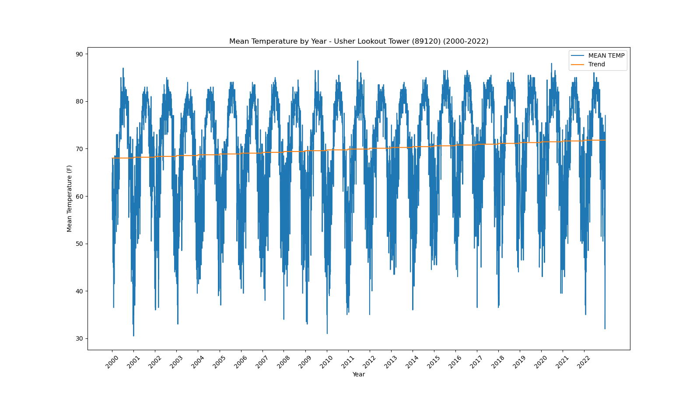</a></div>`)[0];
                popup_51e111c5c4aa25a7ad3cdd0d756b41fd.setContent(html_368952b7305740609112dafdabd6f725);
            
        

        marker_1ab07894b4977a2de0eee8351f5e6f8f.bindPopup(popup_51e111c5c4aa25a7ad3cdd0d756b41fd)
        ;

        
    
    
            var marker_2fbb0c0e39ca50f201b052891befe635 = L.marker(
                [27.1, -82.43],
                {}
            ).addTo(map_d23b6badc06207b568e286b60bd070d9);
        
    
            var icon_1dad92e7c17fc03fa28048dc4b48072b = L.AwesomeMarkers.icon(
                {"extraClasses": "fa-rotate-0", "icon": "info-sign", "iconColor": "white", "markerColor": "orange", "prefix": "glyphicon"}
            );
            marker_2fbb0c0e39ca50f201b052891befe635.setIcon(icon_1dad92e7c17fc03fa28048dc4b48072b);
        
    
        var popup_3be7721a0f2cdad878b790155694a75b = L.popup({"maxWidth": 1000, "minWidth": 500});

        
            
                var html_7a70d736e677ff1322ac7e5008c9fb0b = $(`<div id="html_7a70d736e677ff1322ac7e5008c9fb0b" style="width: 100.0%; height: 100.0%;"><b>Venice (89176)</b><br>lat: 27.1, lon: -82.43<br><a href='../../static/img/plots/timeseries/meantemp_daily/89176_2000-2022.png' target='_BLANK'></a></div>`)[0];
                popup_3be7721a0f2cdad878b790155694a75b.setContent(html_7a70d736e677ff1322ac7e5008c9fb0b);
            
        

        marker_2fbb0c0e39ca50f201b052891befe635.bindPopup(popup_3be7721a0f2cdad878b790155694a75b)
        ;

        
    
    
            var marker_d4c932eec322e0b71b02dea3abb3b542 = L.marker(
                [27.65, -80.42],
                {}
            ).addTo(map_d23b6badc06207b568e286b60bd070d9);
        
    
            var icon_0656d3509d54f3c754b088bfb9ed8e42 = L.AwesomeMarkers.icon(
                {"extraClasses": "fa-rotate-0", "icon": "info-sign", "iconColor": "white", "markerColor": "orange", "prefix": "glyphicon"}
            );
            marker_d4c932eec322e0b71b02dea3abb3b542.setIcon(icon_0656d3509d54f3c754b088bfb9ed8e42);
        
    
        var popup_ae3efa7b334aae92b247eb92a690f472 = L.popup({"maxWidth": 1000, "minWidth": 500});

        
            
                var html_3ce055e2a0efd6a1196889b6140979fb = $(`<div id="html_3ce055e2a0efd6a1196889b6140979fb" style="width: 100.0%; height: 100.0%;"><b>Vero Beach Intl Airport (89214)</b><br>lat: 27.65, lon: -80.42<br><a href='../../static/img/plots/timeseries/meantemp_daily/89214_2000-2022.png' target='_BLANK'></a></div>`)[0];
                popup_ae3efa7b334aae92b247eb92a690f472.setContent(html_3ce055e2a0efd6a1196889b6140979fb);
            
        

        marker_d4c932eec322e0b71b02dea3abb3b542.bindPopup(popup_ae3efa7b334aae92b247eb92a690f472)
        ;

        
    
    
            var marker_26a3d0dce2b75db3bc576257ee4bf222 = L.marker(
                [27.66, -80.37],
                {}
            ).addTo(map_d23b6badc06207b568e286b60bd070d9);
        
    
            var icon_0746bb8135d689a74eb074de6f643fc7 = L.AwesomeMarkers.icon(
                {"extraClasses": "fa-rotate-0", "icon": "info-sign", "iconColor": "white", "markerColor": "orange", "prefix": "glyphicon"}
            );
            marker_26a3d0dce2b75db3bc576257ee4bf222.setIcon(icon_0746bb8135d689a74eb074de6f643fc7);
        
    
        var popup_63d262dabf9476e6f246c8875747057b = L.popup({"maxWidth": 1000, "minWidth": 500});

        
            
                var html_85fb35f49a4ff742b1c1ae669b2f760d = $(`<div id="html_85fb35f49a4ff742b1c1ae669b2f760d" style="width: 100.0%; height: 100.0%;"><b>Vero Beach 4 SE (89219)</b><br>lat: 27.66, lon: -80.37<br><a href='../../static/img/plots/timeseries/meantemp_daily/89219_2000-2022.png' target='_BLANK'>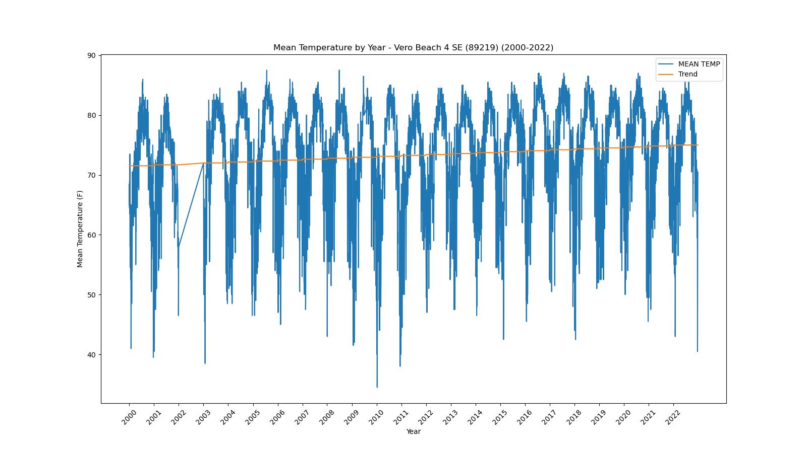</a></div>`)[0];
                popup_63d262dabf9476e6f246c8875747057b.setContent(html_85fb35f49a4ff742b1c1ae669b2f760d);
            
        

        marker_26a3d0dce2b75db3bc576257ee4bf222.bindPopup(popup_63d262dabf9476e6f246c8875747057b)
        ;

        
    
    
            var marker_32d8a8c013fca16dc18b0c6fa3e1f3b4 = L.marker(
                [27.51, -81.89],
                {}
            ).addTo(map_d23b6badc06207b568e286b60bd070d9);
        
    
            var icon_0bea8124d9a79f0b57993271e6c05216 = L.AwesomeMarkers.icon(
                {"extraClasses": "fa-rotate-0", "icon": "info-sign", "iconColor": "white", "markerColor": "orange", "prefix": "glyphicon"}
            );
            marker_32d8a8c013fca16dc18b0c6fa3e1f3b4.setIcon(icon_0bea8124d9a79f0b57993271e6c05216);
        
    
        var popup_c08262defc2adc0600f311137ed05504 = L.popup({"maxWidth": 1000, "minWidth": 500});

        
            
                var html_e77b4fa0bd162e2964186096b809512d = $(`<div id="html_e77b4fa0bd162e2964186096b809512d" style="width: 100.0%; height: 100.0%;"><b>Wauchula (89401)</b><br>lat: 27.51, lon: -81.89<br><a href='../../static/img/plots/timeseries/meantemp_daily/89401_2000-2022.png' target='_BLANK'>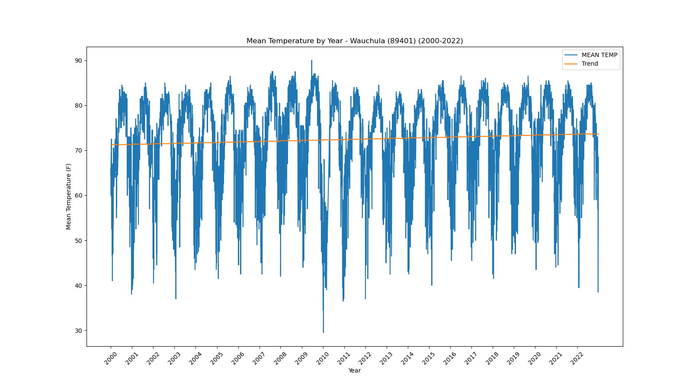</a></div>`)[0];
                popup_c08262defc2adc0600f311137ed05504.setContent(html_e77b4fa0bd162e2964186096b809512d);
            
        

        marker_32d8a8c013fca16dc18b0c6fa3e1f3b4.bindPopup(popup_c08262defc2adc0600f311137ed05504)
        ;

        
    
    
            var marker_454f4a7b3e5ad335282b5c332ca53a79 = L.marker(
                [28.53, -82.58],
                {}
            ).addTo(map_d23b6badc06207b568e286b60bd070d9);
        
    
            var icon_f5380260230e5e9a9436349727220e16 = L.AwesomeMarkers.icon(
                {"extraClasses": "fa-rotate-0", "icon": "info-sign", "iconColor": "white", "markerColor": "orange", "prefix": "glyphicon"}
            );
            marker_454f4a7b3e5ad335282b5c332ca53a79.setIcon(icon_f5380260230e5e9a9436349727220e16);
        
    
        var popup_072ab4ce2a43aacc1952ec49024f8d86 = L.popup({"maxWidth": 1000, "minWidth": 500});

        
            
                var html_272cbb22836a659526cffc978a2d5594 = $(`<div id="html_272cbb22836a659526cffc978a2d5594" style="width: 100.0%; height: 100.0%;"><b>Weeki Wachee (89430)</b><br>lat: 28.53, lon: -82.58<br><a href='../../static/img/plots/timeseries/meantemp_daily/89430_2000-2022.png' target='_BLANK'></a></div>`)[0];
                popup_072ab4ce2a43aacc1952ec49024f8d86.setContent(html_272cbb22836a659526cffc978a2d5594);
            
        

        marker_454f4a7b3e5ad335282b5c332ca53a79.bindPopup(popup_072ab4ce2a43aacc1952ec49024f8d86)
        ;

        
    
    
            var marker_4fc1cd439d4b20ec98bf588542cfe811 = L.marker(
                [26.69, -80.09],
                {}
            ).addTo(map_d23b6badc06207b568e286b60bd070d9);
        
    
            var icon_9ffc87d886d2a44cc284f496a7543000 = L.AwesomeMarkers.icon(
                {"extraClasses": "fa-rotate-0", "icon": "info-sign", "iconColor": "white", "markerColor": "orange", "prefix": "glyphicon"}
            );
            marker_4fc1cd439d4b20ec98bf588542cfe811.setIcon(icon_9ffc87d886d2a44cc284f496a7543000);
        
    
        var popup_3cb771837e69c03ce058c16d3cf2a89d = L.popup({"maxWidth": 1000, "minWidth": 500});

        
            
                var html_0976d283915335be49cf67bc130faaa8 = $(`<div id="html_0976d283915335be49cf67bc130faaa8" style="width: 100.0%; height: 100.0%;"><b>West Palm Beach Intl Airport (89525)</b><br>lat: 26.69, lon: -80.09<br><a href='../../static/img/plots/timeseries/meantemp_daily/89525_2000-2022.png' target='_BLANK'></a></div>`)[0];
                popup_3cb771837e69c03ce058c16d3cf2a89d.setContent(html_0976d283915335be49cf67bc130faaa8);
            
        

        marker_4fc1cd439d4b20ec98bf588542cfe811.bindPopup(popup_3cb771837e69c03ce058c16d3cf2a89d)
        ;

        
    
    
            var marker_459f3342450f03e6b89b48c0619b68e8 = L.marker(
                [30.11, -85.2],
                {}
            ).addTo(map_d23b6badc06207b568e286b60bd070d9);
        
    
            var icon_1eabe1493184a68b911ec9a16fc5cb40 = L.AwesomeMarkers.icon(
                {"extraClasses": "fa-rotate-0", "icon": "info-sign", "iconColor": "white", "markerColor": "orange", "prefix": "glyphicon"}
            );
            marker_459f3342450f03e6b89b48c0619b68e8.setIcon(icon_1eabe1493184a68b911ec9a16fc5cb40);
        
    
        var popup_b5fe9263b06e80db75091458c19682e5 = L.popup({"maxWidth": 1000, "minWidth": 500});

        
            
                var html_1513c0b56670323a84f285f4b15e9f19 = $(`<div id="html_1513c0b56670323a84f285f4b15e9f19" style="width: 100.0%; height: 100.0%;"><b>Wewahitchka (89566)</b><br>lat: 30.11, lon: -85.2<br><a href='../../static/img/plots/timeseries/meantemp_daily/89566_2000-2022.png' target='_BLANK'></a></div>`)[0];
                popup_b5fe9263b06e80db75091458c19682e5.setContent(html_1513c0b56670323a84f285f4b15e9f19);
            
        

        marker_459f3342450f03e6b89b48c0619b68e8.bindPopup(popup_b5fe9263b06e80db75091458c19682e5)
        ;

        
    
</script>
</html>